Kappale 4 2021
4.1 Tentti
Vuoden 2020 tenttiä ei ole wikissä, joten siirrytään vuoteen 2021. Monia samoja kysymyksiä kuin aikasempina vuosina - ei niitä uudestaan.
4.1.1 56-v mies, verenpaine koholla vastaanotto- ja kotimittauksissa. Ei aiempaa verenpainelääkitystä. U-alb/krea 4.7 (<3.5), K 4.0 (3.3-4.8), Na 141 (137-144), Krea 76 (60-100) ja paastoglukoosi 11.4 (4-6). Minkä lääkkeen aloitat ensimmäiseksi verenpainelääkkeeksi?
- B1-selektiivisen betasalpaajan
- Diureetin
- Spironolaktonin
- ACE-estäjän
dPotilaan paastoglukoosi on selvästi koholla ja viittaa vahvasti diabetekseen. Samoin u-alb/krea on koholla, mikä viittaa mikroalbuminuriaan, joka on merkki munuaisten vauriosta (diabeettinen nefropatia).
ACE-estäjät (tai vaihtoehtoisesti ATR-salpaajat) ovat erityisen ensisijaisia verenpainelääkkeitä diabeetikoilla tai mikroalbuminuriassa/proteinuriassa ja muutenkin munuaisvaurioissa ilman albuminuriaakin. Nämä RAAS-estäjät suojaavat munuaisia ja hidastavat munuaissairauden etenemistä. Potilaan kalium- ja kreatiniiniarvot ovat normaalit, mikä sallii ACE-estäjän turvallisen aloituksen.
a: Beetasalpaajia ei yleensä suositella ensisijaiseksi verenpainelääkkeeksi ilman erityisaihetta (esim. sepelvaltimotauti, sydämen vajaatoiminta tai tietyt rytmihäiriöt). Ne voivat myös heikentää sokeritasapainoa ja diabeetikoilla vähentää hypoglykemian oireita vaikeuttaen niiden havaitsemista.
b: Vaikka tiatsididiureetit ovat hyviä perusverenpainelääkkeitä, ne voivat myös hieman heikentää sokeritasapainoa. Myös munuaissuojavaikutuksen puuttuminen tekee niistä huonomman ensisijaisen vaihtoehdon kuin ACE-estäjästä
c: Käytetään lähinnä vaikeahoitoisen eli resistentin verenpainetaudin lisälääkkeenä, sydämen vajaatoiminnan hoidossa (ennustelääke) tai jos epäillään primaaria aldosteronismia. Ei sovellu aloituslääkkeeksi tavallisessa tilanteessa

4.1.2 Miten ohjeistat potilasta mittaamaan verenpainettaan kotona?
- Aina kun hänellä on oireita
- Yhden kerran aamuin illoin 4-7 päivän ajan
- Kaksi kertaa aamuin illoin 4-7 päivän ajan
- Joka aamu kolmen päivän ajan
cKotona itse tehdyt verenpainemittaukset kuvaavat luotettavammin tavanomaista painetasoa ja kohde-elinvaurioiden vaaraa kuin vastaanotto-oloissa tehdyt kertamittaukset. Lisäksi ne ennustavat paremmin ja lähes pitkäaikaisrekisteröinnin veroisesti valtimotautitapahtumia ja -kuolemia.
Verenpaine ja syke mitataan ennen lääkkeen ottoa aamulla kello 6–9 ja illalla kello 18–21 kahdesti (kaksoismittaus) 1–2 minuutin välein 4–7 päivän ajan. Aamumittausten, iltamittausten ja aamu- ja iltamittausten keskiarvot lasketaan ja kirjataan. Aina tulisi mitata samassa paikassa, samaan aikaan, samasta olkavarresta ja mukavasti istuen. Verenpaineen seurantaa aloitettaessa on hyvä tarkistaa, ettei käsien välillä ole merkittävää (yli 10 mmHg) paine-eroa. Jos ero on merkittävä, mitataan siitä kädestä, jossa paine on korkeampi.
Ennen mittausta tulisi rauhoittua vähintään 10 minuttia. Aika ruokailusta, tupakasta, kahvista tai kolajuomasta tulisi olla vähintään 30 minuuttia.
a: Hypertensio on siitä ilkeä sairaus, että se ei yleensä aiheuta oireita, kuin vasta sen jälkeen kun pääte-elinongelmia alkaa ilmentymään; “hiljainen tappaja”. Ei siis voi mitata verenpaineita vain oireiden perusteella.
b: Mittaukset tehdään kaksoismittauksina, jotta saadaan luotettava ja tarkka tulos. Se vähentää kertamittaukseen liittyvää epävarmuutta ja poistaa satunnaisia heilahteluja. Ensimmäinen mittaus myös auttaa kehoa tottumaan mansetin puristukseen, ja toinen mittaus tehdään levollisemmassa tilassa.
d: Aamu- ja iltapaineiden mittaaminen on parempaa kuin vain aamumittaukset, koska niiden erosta voi päätellä asioita. Esim. iltamittausten tasoa korkeampi aamumittausten taso voi viitata uniapneaan tai runsaaseen alkoholin käyttöön. Samoin vastauksessa ole 3 päivää on liian lyhyt aika, koska hoidon arviointiin tarvitaan vähintään neljän päivän mittauskeskiarvot.
4.1.3 Mikä verenpainetaso kotimittauksissa vastaa vastaanotolla mitattua verenpainetta 140/90 mmHg?
- 140/90 mmHg
- 140/85 mmHg
- 135/85mmHg
- 130/80 mmHg
cVerenpainetaso ja verenpaineen luokittelu varmistetaan tyypillisesti elintapahoidon aikana kotimittauksella tai pitkäaikaisrekisteröinnillä, jos vastaanotolla mitattu systolinen painetaso on 140–199 mmHg tai diastolinen painetaso 90–129 mmHg. Piilevän hypertension mahdollisuus selvitetään kotimittauksella tai pitkäaikaisrekisteröinnillä, jos vastaanotolla mitattu painetaso on 130–139 tai 85–89 mmHg ja potilaalla on muita valtimotaudin vaaratekijöitä.
Kohonneen verenpaineen luokittelu täten perustuu ensisijaisesti vastaanoton ulkopuolella tehtyihin mittauksiin (4–7 päivän aikana aamulla ja illalla kotona tehtyjen kaksoismittausten keskiarvo tai verenpaineen pitkäaikaisrekisteröinti), koska ne ovat paljon luotettavampia kuin vastaanottomittaukset. Vastaanottomittauksia käytetään ensisijaisesti seulonnassa. Jos jostain syystä vastaanoton ulkopuoliset mittaukset eivät onnistu, luokittelu voidaan periaattessa tehdä vastaanottomittauksiin perustuen (neljän eri päivänä tehdyn kaksoismittauksen keskiarvo).
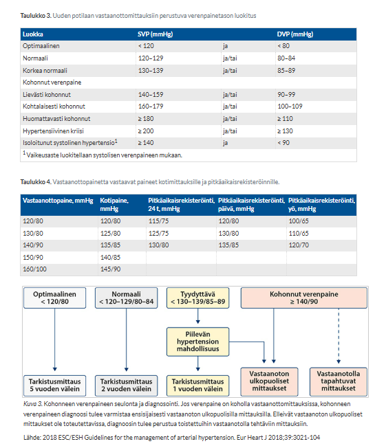
4.1.4 63-vuotias mies saapuu verenpainetaudin vuosikontrolliin. Verenpainelääkityksenä on selektiivinen betasalpaaja ja tiatsididiureetti puolella maksimiannoksesta sekä angiotensiini II -reseptorin salpaaja maksimiannoksella. Kotona mitattu verenpaine on selkeästi koholla. Laboratoriokokeissa K 5.7 (3.3-4.8), Na 143 (137-144) ja Krea 82 (60-100). Miten muutat lääkehoitoa?
- Nostat betasalpaajan maksimiannokseen
- Lopetat angiotensiini II -reseptorin salpaajan ja aloitat kalsiumkanavan salpaajan
- Aloitat spironolaktonin
- Nostat tiatsididiureetin maksimiannokseen
bPotilaalla on hyperkalemia. ATR-salpaajat ja ACE-estäjät vähentävät aldosteronin aktiivisuutta (ATR) / muodostumista (ACEi) ja johtavat siten kaliumin säästymiseen.
Jos kaliumarvo nousee hoidon aikana yli tason 5.5 mmol/l, kyseisen lääkityksen annosta on joko vähennettävä tai jos kalium on yli 6 niin silloin lääkitys on viimeistään tauotettava tai lopetettava, sillä vaikea hyperkalemia altistaa hengenvaarallisille sydämen rytmihäiriöille.
Lääkkeen lopettaessa tilalle tarvitaan toinen verenpainelääke, jotta huonossa hoitotasapainossa oleva verenpaine saadaan laskemaan. Kalsiumkanavan salpaaja (esim. amlodipiini) on mahdollinen lisä jo käytössä olevien lääkkeiden päälle.
a: Spironolaktoni on kaliumia säästävä diureetti (aldosteroniantagonisti). Sen aloittaminen potilaalle, jolla on jo valmiiksi merkittävä hyperkalemia, on ehdottomasti vasta-aiheista. Jos kalium olisi taas normaali, spironolaktoni voisi olla hyvä valinta resistentin verenpainetaudin hoitoon.
c: Tiatsididiureetit poistavat kaliumia, joten teoriassa annoksen nosto voisi hieman laskea kaliumarvoa. ATR-salpaaja on kuitenkin ensisijainen syyllinen näin merkittävään hyperkalemiaan, ja se on poistettava. Lisäksi verenpainelääkkeiden kansssa annoksen nostaminen puolikkaasta maksimiin ei juurikaan enää laske verenpainetta, mutta lisää merkittävästi metabolisia haittavaikutuksia.
d: Beetasalpaajan annoksen nosto ei korjaa käsillä olevaa kaliumongelmaa ja taas verenpainelääkkeiden kanssa yleensä käytetään mieluummin monia lääkkeitä pienillä annoksilla eikä tavoitella maksimiannoksia.
4.1.5 68-vuotias mies saapuu kontrolliin lipidilääkityksensä vuoksi ensimmäistä kertaa neljään vuoteen. Verenpainearvot ovat aiemmin olleet vain hieman koholla ja verenpainelääkitystä ei ole. Kontrollin yhteydessä oireettoman miehen verenpaineeksi mitataan 206/110 mmHg. Mitä teet?
- Lähetät potilaan päivystyslähetteellä erikoissairaanhoitoon
- Lähetät potilaan 1-7 päivää lähetteellä erikoissairaanhoitoon
- Aloitat potilaalle kalsiumkanavasalpaajan (amlodipiini 10 mg x 1) ja elintapahoidot ja sovit kontrollin peruslaboratoriotutkimusten kera 3 päivän päähän.
- Kehoitat potilasta suorittamaan verenpaineen kotimittauksia ja sovit kontrollin kolmen kuukauden päähän.
cKyseessä on hypertensiivinen kiiretilanne, joka on hypertensiivisen kriisin alaluokka. Hypertensiivinen kriisi siis tarkoittaa vaikeaa hypertensiota, jossa systolinen verenpaine on ≥ 200 ja/tai diastolinen on ≥ 130. Kriisi jaetaan vaikeusasteen mukaan hypertensiiviseen hätätilanteeseen tai kiiretilanteeseen.
Hypertensiivisen kiiretilanteen hoito toteutetaan välittömästi yleensä avohoidossa aloitettavalla 3-4 lääkkeen yhdistelmälääkityksellä (esim. amlodipiini 5 mg + bisoprololi 5 mg + hydroklooritiatsidi 12.5 mg + enalapriili 10 mg) ja hoitovaste tarkistetaan 1-3vrk kuluessa. Periaatteessa usein kuitenkaan ei ehkä aloiteta näin äkäisellä lääkekombinaatiolla.
a: Päivystyksellistä hoitoa tarvitaan yleensä vain, jos potilaalla on äkillisiä kohde-elinvaurion oireita eli kyseessä olisi hypertensiivinen hätätilanne. Siinä tarvitaan yleensä iv-verenpainelääkkeitä (esim. klonidiini, nitroprussidi, labetaloli, nikardipiini) ja tavoitteena on alentaa verenpaine lähipäivien aikana turvalliselle tasolle. Sellaisena voidaan useimmiten pitää tasoa, joka on alle 160/100 mmHg.
b: Perusterveydenhuolto kykenee hoitamaan ja selvittämään komplisoitumattoman tilanteen.
d: Hypertensiivisessä kiiretilanteessa hoidon aloittamista ei turvallisesti voi lykätä kuukausien päähän, sillä riski sydän- ja aivoverisuonitapahtumiin on tällä tasolla akuutisti suurentunut. Tilanne vaatii nopeampaa puuttumista ja seurantaa päivien sisällä.
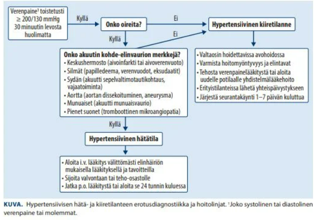
4.1.6 Mikä seuraavista lääkkeistä ei aiheuta kohonnutta verenpainetta?
- Tulehduskipulääkkeet
- Estrogeeni
- Parasetamoli
- Sympatomimeettejä sisältävät lääkkeet
cParasetamoli on kipu- ja kuumelääke, joka ei vaikuta merkittävästi perifeerisesti eikä siten myöskään mekanistisesti nosta verenpainetta samalla tavalla kuin muut lääkkeet tässä.
a: Tulehduskipulääkkeet (NSAIDit) vähentävät munuaisglomeruluksissa afferentin arteriolin dilataatiota (estävät prostaglandiinien synteesiä). Tämä johtaa GFR:n laskuun ja suolan ja nesteen kertymiseen elimistöön -> hypertensio. NSAIDit myös estävät myös muiden alueiden prostaglandiinisynteesiä -> kohonnut vastus ja hypertensio.
b: Estrogeeni lisää maksan angiotensinogeenin tuotantoa, mikä aktivoi reniini-angiotensiini-aldosteronijärjestelmää (RAAS) ja siten voi johtaa nesteen kertymiseen ja verenpaineen nousuun osalla käyttäjistä
d: Sympatomimeetit (esim. noradrenaliini, dobutamiini; monet nenäkongestatit, kuten pseudoefedriini; stimulantit, kuten metyylifenidaatti/lisdeksamfetamiini yms) stimuloivat sympaattista hermostoa ja supistavat verisuonia suoraan ja voivat lisätä sydämen sykettä, mikä johtaa verenpaineen nopeaan nousuun4.1.7 65-vuotias tupakoiva mies, ei lääkitystä käytössä. Rasituksessa painava tunne rintakehällä 2vkon ajan. Nyt ensiapuun oireen esiintyessä lepotilanteessa. TnT 8, Hb 137, ekg:ssa ei muutoksia. Mikä seuraavista sopii parhaiten diagnoosiksi?
- STEMI
- NSTEMI
- UAP
- Keuhkoembolia
cLevossa esiintyvä rintakipu erottaa epävakaan angina pectoriksen vain rasituksessa ilmenevästä vakaasta angina pectoriksesta.
a ja b: UAP:n ja sydäninfarktin (STEMI tai NSTEMI) erottaa sydänlihasvaurion olemassaolo eli sydäninfarktissa troponiinit nousevat, kun taas UAP:ssa ne pysyvät normaaleina.
STEMI:n ja NSTEMI:n taas erottaa EKG; jos on ST-nousua, niin kyseessä on STEMI. EKG voi siis NSTEMI:ssä olla normaali, mutta TnT olisi koholla.
d: Vaikka keuhkoembolia voi aiheuttaa rintakipua, potilaan esitiedot (aikaisempi rasituksessa esiintyvä rintakipu) viittaavat enemmän sepelvaltimotautiin.

4.1.8 80-vuotias hyperkolesterolemiaa sairastava itäsuomalainen hyväkuntoinen mies, tulee rintakivun takia ensiapuun. Kipu alkanut 1h sitten ja loppui ensiapuun tullessa. Nyt oireeton, TnT 13, HB 140, krea 69, ekg:ssa LBBB, ei muutosta vuosi sitten otettuun filmiin nähden. Mitä teet?
- Aloitan ASA 100mgx1 (ensin 250mg lataus) ja teen lähetteen kardiologian poliklinikalle
- Aloitan ASA 100mgx1 (ensin 250mg lataus) ja kehotan sopimaan terveyskeskuskontrollin 1kk päähän
- Aloitan ASA 100mgx1 (ensin 250mg lataus) ja otan muutaman tunnin kuluttua uuden TnT-kokeen
- Aloitan ASA 100mgx1 (ensin 250mg lataus) ja ohjelmoin keuhkoembolian TT-tutkimuksen.
cSydänlihasvaurion merkkiaine, troponiini (joissain laboratioissa TnT, joissain taas TnI), ei nouse veressä välittömästi sydäninfarktin alkaessa.
Vaikka nykyiset herkät troponiinitestit reagoivat nopeasti, arvon nousu kestää tyypillisesti 1–3 tuntia oireiden alusta. Siksi 1 tunnin kohdalla otettu normaali TnT-arvo (13 ng/l, viiteraja on yleensä < 14 ng/l) ei vielä sulje pois sydäninfarktia.
Koska potilaalla on vahvat riskitekijät sepelvaltimotaudille (ikä, mies, itäsuomalaisuus, hyperkolesterolemia) ja tyypillinen oirekuva, kyseessä on vahva epäily akuutista sepelvaltimotautikohtauksesta (ACS). Tämän vuoksi potilaalle annetaan asetyylisalisyylihappoloudaus 250mg p.o. estämään verihiutaleiden aggregaatiota, ja häntä on seurattava ensiavussa. Diagnoosin poissulku tai vahvistaminen vaatii ehdottomasti sarjatroponiinin (uusi verikoe 1-3 tunnin kuluttua paikallisesta ACS-algoritmista riippuen).
a ja b: Kotiutuminen mahdollisessa sydäninfarktivaiheessa on vaarallista
d: Keuhkoembolian rutiininomainen TT-kuvaus ilman vahvempaa kliinistä epäilyä (esim. hengenahdistus, takykardia, matala happisaturaatio) ei ole tässä vaiheessa oikea ensisijainen tutkimus4.1.9 70-vuotias mies. Rasituskokeessa 60W kohdalla EKG: Mikä on riskiarviosi potilaasta EKG:n perusteella?
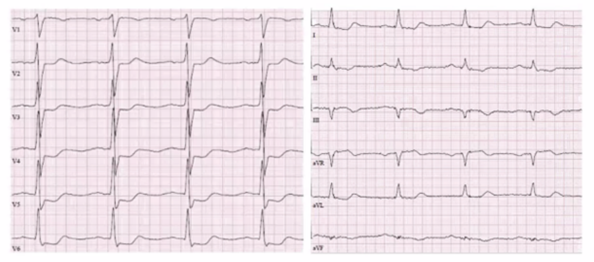
- Matala riski
- Keskisuuri - matala riski
- Keskisuuri - korkea riski
- Korkea riski
dKliininen rasituskoe eli rasitus-EKG on edelleen käyttökelpoinen diagnostinen testi, kun epäillään ahtauttavaa sepelvaltimotautia. Syynä ovat testin helppous ja hyvä saatavuus. Rasitus-EKG tarjoaa iskemian arvion lisäksi tärkeää informaatiota mm. oireiden yhteydestä rasitukseen, potilaan suorituskyvystä, verenpaineen rasitusvasteesta ja rytmin käyttäytymisestä rasituksessa.
Rasituskokeen osuvuutta ahtauttavan sepelvaltimotaudin toteamisessa on selvitetty lukuisissa tutkimuksissa, joissa sen keskimääräinen herkkyys (sensitiivisyys) on ollut 68 % ja spesifisyys 77 %.
Positiivisena tuloksena pidetään vähintään 1 mm:n tasomaista tai alasviettävää ST-välin laskua 0,06–0,08 s J-pisteen jälkeen rasituksen provosoimana.
Yllä olevassa EKG:ssa on merkittävät laaja-alaiset alaspäin viettävät ST-laskut jo 60W kohdalla, joka viittaa sydäntä kauttaaltaan affisioiviin ahtaumiin, jotka jo suhteellisen kevyessä rasituksessa aiheuttavat ongelmia -> korkean riskin potilas.
4.1.10 UAP ja NSTEMI eroavat toisistaan. Mikä seuraavista ei ole totta:
- UAP:ssa troponiini on matala
- NSTEMI ja UAP hoitolinjat ovat samanlaiset
- UAP kuuluu akuutin koronaarisyndrooman jatkumoon
- NSTEMI:ssä troponiini on aina matala, mutta suonessa on plakkiruptuura
dNSTEMI (Non-ST-Elevation Myocardial Infarction) tarkoittaa sydäninfarktia, johon liittyy sydänlihaksen solutuhoa; siihen vain ei liity EKG:ssa ST-nousua (STEMI). Sydänlihastuho näkyy verikokeissa nimenomaan kohonneena troponiiniarvona. Jos troponiiniarvo pysyy normaalina (matalana eli yleensä alle <14), diagnoosi ei voi olla sydäninfarkti (NSTEMI), vaan silloin kyseessä on UAP (epästabiili angina pectoris = rintakipua levossakin, joka erottaa tilan stabiilista angina pectoriksesta).
a: UAP:ssa sydänlihas kärsii hapenpuutteesta, mutta solutuhoa ei vielä tapahdu, joten troponiinia ei vapaudu verenkiertoon yli viiterajojen.
b: Hoitolinjat, kuten ASA, ADPr-estäjät, antikoagulaatio sekä riskiarvioon perustuva tarve varjoainekuvaukselle noudattavat samoja hoitolinjoja.
c: Akuutti koronaarioireyhtymä (ACS) on jatkumo, jonka lievin muoto on UAP (iskemia, ei vauriota), keskimmäinen NSTEMI (iskemia ja vaurio, yleensä kuvastaa non-trasmuraalista infarktia) ja vakavin STEMI (koko sydänlihaksen seinämän läpäisevä vaurio eli transmuraalinen infarkti).
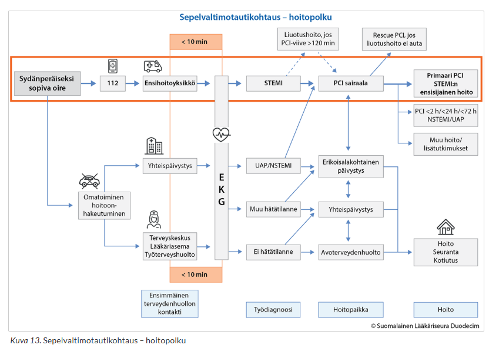
4.1.11 68-vuotias potilas tulee ison etuseinäinfarktin jälkeen 3 kk kontrolliin ja kertoo, että hän oli pari viikkoa aiemmin kahvipöydässä pyörtynyt ilman ennakko-oireita tai rintakipuja. Oireen syynä on todennäköisesti:
- Eteisvärinäkohtaus
- Vasovagaalinen kollapsi
- Kammiotakykardiakohtaus
- Epileptinen kohtaus
- Liian kuuma kahvi
cPotilaalla on taustalla hiljattain sairastettu iso etuseinäinfarkti. Sydäninfarktin jälkeinen arpi muuttaa sydämen normaalia sähköistä toimintaa ja on merkittävä riskitekijä vaarallisille kammioperäisille rytmihäiriöille re-entry-circuitin kautta.
Synkopee täysin ilman ennakko-oireita (kuten huimausta tai sydämentykytystä) ja vieläpä istuma-asennossa potilaalla, jolla on vaikea rakenteellinen sydänsairaus, on todennäköisimmin kammiotakykardian aiheuttama. Rytmihäiriön alkaessa sydämen pumppausteho ja siten myös aivojen verenkierto romahtaa ja taju lähtee sekunneissa.
a: Eteisvärinä on yleinen rytmihäiriö, mutta se ei tyypillisesti aiheuta äkillisiä synkopeekohtauksia. Potilaan aikaisempi infarktitausta myös vie ajatuksia kammiotakykardian suuntaan.
b: Tähän liittyy lähes aina ennakko-oireita (kylmähikisyys, pahoinvointi, näön pimeneminen) ja se tapahtuu tyypillisimmin esim. pitkään seistessä.
d: Epileptinen kohtaus on kylläkin mahdollinen ja tulee aina ottaa erotusdiagnostiikassa synkopeepotilailla huomioon. Synkopee ja epileptinen kohtaus yleensä erotetaan kohtauskuvauksen avulla ja tässä tukena on varsinkin silminnäkijäanamneesi. Äkillinen tajuttomuus tuoreen ison sydäninfarktin sairastaneella potilaalla on kuitenkin todennäköisimmin sydänperäinen.
e: Kuuma kahvi ei tyypillisesti aiheuta synkopeeta ellei kahvi satu aiheuttamaan todella voimakasta kipureaktiota ja vasovagaalista heijastetta, mutta silloinkin potilaalla olisi ollut ennakko-oireita.4.1.12 84-vuotias nainen, jolla lievä sepelvaltimotauti ja verenpainetauti, kontrollikäynnillä terveyskeskuksessa. Ei sydänoireita, mutta toteat uuden eteisvärinän, jonka kammiovaste on 75/min. Peruslaboratoriokokeet mukaan lukien PVK ja kreatiniini normaalirajoissa. Mikä seuraavista toimintavaihtoehdoista tai väittämistä on oikein?
- Onnistunut kardioversio ei vähennä pitkällä tähtäimellä tämän potilaan aivoinfarktin ja kuoleman vaaraa
- Eteisvärinän takia potilaan on syytä välttää raskaita ponnisteluja
- 3-4 viikon tehokkaan antikoagulaatiohoidon jälkeen tehty kardioversio parantaa tämän potilaan elämänlaatua
- Aloitan suoran antikoagulantin aspiriinin lisälääkkeeksi
aJos eteisvärinän hoidossa päädytään pysyvään eteisvärinään ja sykkeenhallintaan, potilaalle on hyvä kertoa hoitomyöntyvyyden parantamiseksi, että ennuste on lieväoireisilla potilailla (EHRA 1–2) sykkeenhallinnan aikana yhtä hyvä kuin lääkkeellisen rytminhallinnan aikana. Elimistö yleensä tottuu pysyvään eteisvärinään syketaajuuden optimoinnin myötä (“taloudellinen flimmeri”).
Suuret kliiniset monikeskustutkimukset (kuten AFFIRM-tutkimus) ovat osoittaneet, että iäkkäämmillä ja muuten hyväkuntoisilla potilailla pelkkä kammiovasteen hallitseminen (sykekontrolli) tarjoaa yhtä hyvän ennusteen (kuolleisuus ja aivoinfarktiriski ovat samat) kuin aggressiivinen sinusrytmiin pyrkiminen (rytmikontrolli estolääkityksellä ja toistuvilla kännöillä).
b: Urheilua ei tarvitse välttää eteisvärinässä; se on oikeastaan hyväksi
c: Kardioversio ei paranna potilaan elämänlaatua, jos potilas on jo oireeton eteisvärinän suhteen
d: Potilas kyllä vaatii suoran antikoagulantin (cha2ds2va-pisteistä iästä, verenpainetaudista ja sepelvaltimotaudista yhteensä 4 pistettä). ASAa ei vain tarvitse jättää AK-hoidon rinnassa, koska pelkkä antikoagulantti riittää suojaamaan sekä aivoinfarktilta että sepelvaltimotapahtumilta. Yhdistelmähoito nostaisi potilaan vuotoriskin moninkertaiseksi ilman merkittävää lisähyötyä.4.1.13 Mikä väite väärä?
- Beetasalpaaja on ensisijainen lääke eteisvärinän sykkeen hallinnassa
- WPW-potilaalla eteisvärinä voi olla hyvin nopea
- EHRA3 luokka tarkoittaa eteisvärinän vaikeita oireita, joiden takia jokapäiväinen elämä vaikeutuu
- Sinusrytmiin pyrkiminen ja sen säilyttäminen parantavat iäkkään eteisvärinäpotilaan ennustetta
dSuuret kliiniset monikeskustutkimukset (kuten AFFIRM-tutkimus) ovat osoittaneet, että iäkkäämmillä ja muuten hyväkuntoisilla potilailla pelkkä kammiovasteen hallitseminen (sykekontrolli) tarjoaa yhtä hyvän ennusteen (kuolleisuus ja aivoinfarktiriski ovat samat) kuin aggressiivinen sinusrytmiin pyrkiminen (rytmikontrolli estolääkityksellä ja toistuvilla kännöillä).
a: Totta. Tarvittaessa vaihtoehtoisesti kalsiuminestäjä tai digoksiini lisänä. Amiodaroniakin voidaan käyttää, mutta sen pitkäaikaista käyttöä pitäisi välttää sydämenulkoisten haittavaikutusten takia.
b: Erittäin nopea (yli 200/min) leveäkompleksinen eteisvärinä on harvinainen ja viittaa WPW-oireyhtymään eli Wolff-Parkinson-White-oireyhtymään. Siinä korkeataajuuksiset eteisaktivaatiot voivat välittyä Kentin rataa pitkin suoraan kammioihin ja aiheuttaa todella nopean kammiovasteen ja jopa kammiovärinän.
c: Eteisvärinän oireiden vaikeusasteen arvioinnissa suositellaan käytettäväksi European Heart Rhythm Associationin kehittämää EHRA-luokitusta.
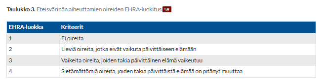
4.1.14 Mikä seuraavista on tyypillisin keuhkoemboliapotilaan EKG löydös
- Vasen haarakatkos
- QS-kompleksi alaseinäkytkennöissä
- Etuseinän ST-tason lasku
- Etuseinän T-invertaatio
dKeuhkoemboliassa EKG-löydökset ovat useimmiten epäspesifejä, mutta embolian aiheuttama keuhkoverenkierron vastuksen äkillinen nousu aiheuttaa aiheuttaa oikean kammion ylikuormituksen, joka heijastuu EKG:ssä tyypillisesti etuseinäkytkentöihin (V1–V4) ja alaseinäkytkentään III käänteisinä eli negatiivisina T-aaltoina (T-invertaatioina). Se on sinustakykardian jälkeen yksi yleisimmistä keuhkoemboliaan viittaavista EKG-muutoksista. Klassisesti opetettu löydös on ns. S1Q3T3-kuvio, joka viittaa isoon S-aaltoon kytkennässä I ja syvään Q-aaltoon sekä T-aallon kääntymiseen kytkennässä III. Muita ovat mm. epäspesifiset ST-T-muutokset, uusi RBBB-katkos, S-aaltoa suurempi R-aalto kytkennässä V1 ja QRS-frontaaliakseli >90 astetta.
Normaali EKG ei poissulje keuhkoemboliaa.
a: Koska keuhkoembolia kuormittaa nimenomaan sydämen oikeaa puolta, siihen voi liittyä oikea haarakatkos (RBBB) – ei vasen haarakatkos (LBBB).
b: Laaja QS-kompleksi tarkoittaa r-aallon puuttumista, mikä on usein merkki sairastetusta, pysyvästä sydäninfarktista kyseisellä alueella (patologinen q-aalto). Keuhkoembolian klassiseen S1Q3T3-ilmiöön kuuluu kyllä syvä Q-aalto kytkennässä III, mutta se rajoittuu yleensä vain III-kytkentään eikä muodosta laajaa QS-kompleksia koko alaseinälle (II, III, aVF).
c: Keuhkoembolialle on yleistä epäspesifiset ST-muutokset, joihin sisältyy myös ST-nousujakin. Pelkät ST-laskut eivät siis ole suoraan keuhkoemboliaan viittaavia.4.1.15 60-vuotias henkilö on tupakoinut 45 askivuotta. Hänellä on myös kohonnut verenpaine ja tyypin 2 diabetes. Potilaalla on 2 vko ajan ollut rasituksessa tuntuvaa rintakipua, joka heijastuu kaulaan. Kipu helpottaa levossa. Viimeisten 2 päivän aikana kipu tulee jo WC-reissulla ja muutamia kertoja levossa. Perusverikokeet ovat viitealueella, TNT 11. Potilas tulee TK:een pikavastaanotolle, jossa hän on tutkimuspöydällä on kivuton ja hyvävointinen. EKG:ssa ei muutoksia. Mikä diagnoosi ja hoitoehdotus on eniten oikein?
- Potilaalla on stabiili sepelvaltimotautioireisto ja TNT matala. Potilas voidaan lähettää 8-30vrk jatkotutkimuksiin.
- Otetaan FIDD ja tehdään jatkohoitopäätös tämän perusteella.
- Potilaalla on epästabiili angina pectoris ja hänet tulee lähettää päivystyksellisesti sairaalahoitoon.
- Potilaalla on NSTEMI, hänet tulisi lähettää 1-7 vrk kiireellisyydellä angiografiaan
cPotilaan rintakipuoire on selvästi muuttunut kahden viime päivän aikana epästabiiliksi (UAP), koska oireita on nyt ilmentynyt jo levossakin. Potilaan TnT on kuitenkin normaali, joten kyseessä ei vielä ole selkeä infarkti. Vaikka potilas on vastaanottohetkellä kivuton, uusiutuva lepokipu tarkoittaa, että sepelvaltimon plakki on epävakaa ja suoni uhkaa mennä kokonaan tukkoon. Potilaalla on myös useita merkittäviä riskitekijöitä (suuri askivuosimäärä, diabetes, verenpainetauti). Hänet luokitellaan suuren vaaran potilaaksi, ja hänet on lähetettävä päivystyksellisesti erikoissairaanhoitoon jatkoseurantaan (seurantatroponiinit, lääkityksen aloitus/tehostus) ja päivystykselliseen/kiireelliseen koronaariangiografiaan.
a: Oireisto oli stabiili kaksi viikkoa sitten, mutta lepokivut tekevät siitä nyt epästabiilin. Stabiilin taudin tutkimusaikataulut (8–30 vrk) olisivat tälle potilaalle hengenvaarallisen hitaita, sillä riski sydäninfarktille tai äkkikuolemalle lähipäivinä on suuri.
b: FIDD (D-dimeeri) on fibrinolyysin tuote, jota käytetään laskimotukoksen tai keuhkoembolian poissulkuun. Sillä ei ole mitään roolia sepelvaltimotautikohtauksen diagnostiikassa.
d: Diagnoosi on tässä vaiheessa UAP, koska troponiini ei ole kohonnut (TnT:n raja on tyypillisesti 14). NSTEMI-potilasta ei myöskään lähetettäisi kiireellisenä angiografiaan, vaan hän kuuluisi päivystyksellisesti hoitoon.4.1.16 Myo- ja perikardiitin tyypillisin aiheuttaja on?
- Bakteeri-infektio
- Virusinfektio
- Autoimmuunisairaudet
- Sytostaatit
bMyokardiitin yleisin etiologia on virusperäinen infektio. Yleisimpiä ovat enterovirukset (esim. coxsackie ja echo) ja parvovirus B19.
Myokardiitin tyypillisiä oireita ovat mm. rintakivut, rytmihäiriöt, hengenahdistus tai yllättäen ilmaantunut sydämen vajaatoiminta etenkin infektiolöydösten ohessa tai sairastetun infektion jälkeen. Heikentynyt suorituskyky, takykardia, rytmihäiriöt (kammioarytmiat) ja jopa tajunnanmenetys ovat myös mahdollisia. Lievät myokardiitit eivät välttämättä aiheuta oireita.
Myokardiitille yleisimpiä laboratoriolöydöksiä ovat kohonnut troponiini, tulehdusarvot (CRP, La) ja kohonnut proBNP, jos vajaatoiminnan oireita. Ensilinjan tutkimus on EKG (voi olla ST-T-muutoksia, haarakatkoksia, AV-blokkeja; EKG voi myös olla täysin normaali) ja kaikututkimus ja varjoainetehosteinen magneettitutkimus on sydämen kaikukuvauksen (voidaan tyypillisesti nähdä globaalia seinämän liikehäiriötä ja hypokineesiä sekä vasemman kammion dilataatiota; on tosin usein normaali lievissä tilanteissa) jälkeen seuraava kuvantamismenetelmä, jos myokardiittia pidetään todennäköisenä ja siihen liittyy suuren vaaran piirteitä, kuten vaikea vasemman kammion supistushäiriö, kammioarytmioita tai johtumishäiriöitä. Kultastandardi diagnoosin suhteen eli biopsia on todella harvoin tarpeellinen, mutta hemodynamiikkaa horjuttavassa, rytmihäiriöin ja johtumishäiriöin ilmenevässä tai pitkittyvässä myokardiitissa sydänlihasbiopsiaa tulee aina harkita.
Hoito on yleensä lepo, koska suurin osa tapauksista on lieviä ja paranee itsestään. Avohoidossa voidaan seurata oireettomia tai lieväoireisia potilaita, joilla ei ole merkittäviä sydänlöydöksiä ja joiden myokardiittiepäily perustuu lähinnä vähäisiin EKG-muutoksiin. Tilanne on hyvä kontrolloida esim. 1–2 viikon välein n. 2 kk:n ajan sekä sydänoireiden ilmaantuessa. Kovan fyysisen rasituksen välttäminen on aiheellista, kunnes lepo-EKG ja troponiinipitoisuudet ovat normaalistuneet, mihin tyypillisessä myoperikardiitissa kuluu 2–3 kk. Urheileville on syytä tehdä rasituskoe tässä vaiheessa. Infektiomyokardiitti paranee yleensä täydellisesti, mutta nykykäsityksen mukaan infektion aiheuttaja (virus) voi joissakin tapauksissa jäädä sydänlihakseen ja johtaa dilatoivan kardiomyopatian kaltaiseen taudinkuvaan kuukausia tai vuosia myöhemmin.
Vaikeat oireet voivat vaatia sairaalahoitoa. Rintakipua voidaan lievittää tilapäisesti käytettävällä tulehduskipulääkkeellä ja vaikeaan kipuun voidaan käyttää sairaalassa opioideja. Jos aiheuttaja on jokin muu kuin yleisimmät virukset, niin voidaan miettiä etiologista hoitoa. Esimerkiksi harvinaisissa bakteerimyokardiiteissa voidaan hoitaa potilasta mikrobilääkkein.
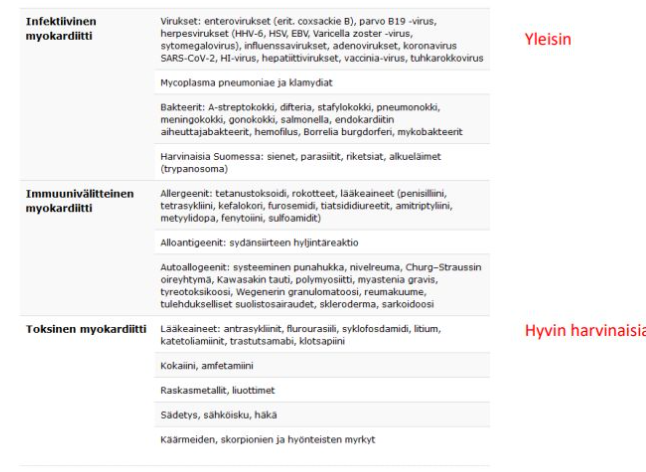
4.1.17 Mikä seuraavista ei ole totta?
- Myokardiitti selittää suurimman osan nuorten odottamattomista äkkikuolemista
- Myokardiitilla on yhteys dilatoivaan kardiomyopatiaan
- Sarkoidoosin, jättisolumyokardiitin ja eosinofiilisen myokardiitin aiheuttaman taudin ennuste on huonompi, kuin infektion laukaiseman myokardiitin
- Sairastetun myokardiitin jälkeen liikuntakielto on aiheellinen ainakin 1kk ajan
aVaikka sydänlihastulehdus (myokardiitti) on merkittävä ja pelätty nuorten ja urheilijoiden äkkikuoleman syy, se ei selitä suurinta osaa niistä (eri tutkimusten mukaan vain noin 2–12 % tapauksista).
Nuorten odottamattomien äkkikuolemien taustalla on useimmiten rakenteellinen tai geneettinen sydänsairaus (kuten hypertrofinen kardiomyopatia (yleisin) tai rytmihäiriölle altistava oikean kammion kardiomyopatia eli ARVD (2. yleisin)) tai perinnöllinen ionikanavasairaus (kuten pitkä QT -oireyhtymä tai Brugadan oireyhtymä). Huomattava osa nuorten äkkikuolemista jää kuitenkin ruumiinavauksessa rakenteellisesti selittämättömäksi (SADS, Sudden Arrhythmic Death Syndrome), jossa jokin tunnistamaton sähköisen toiminnan häiriö johtaa sydämen pysähtymiseen.
b: Krooninen myokardiitti voi manifestoitua dilatoivan kardiomyopatian taudinkuvalla
c: Tavallinen, useimmiten enteroviruksen tai muun viruksen laukaisema lymfosiittinen myokardiitti on ennusteeltaan yleensä hyvä ja paranee itsekseen levolla. Sen sijaan harvinaisemmat autoimmuunitaustaiset ja spesifit muodot, kuten sydänsarkoidoosi, jättisolumyokardiitti tai eosinofiilinen myokardiitti, johtavat usein merkittävämpään ja pitkäkestoiseen sydämen vajaatoimintaan ja voivat vaatia aggressiivista kortisoni-/immunosuppresiivihoitoa tai jopa sydänsiirtoa.
d: Kovan fyysisen rasituksen välttäminen on aiheellista, kunnes lepo-EKG ja troponiinipitoisuudet ovat normaalistuneet, mihin tyypillisessä myoperikardiitissa kuluu 2–3 kk. Urheileville on syytä tehdä rasituskoe tässä vaiheessa. Yleensä kielto on kestää jopa 3-6 kuukautta (esim. ESC-guidelineissa).4.1.18 46-vuotiaalla aiemmin terveellä naisella on ollut puolen vuoden ajan iltaisin turvotustaipumusta alaraajoissa ja juoksulenkillä vauhti on hidastunut aiemmasta. Kliininen status on normaali, lepo-EKG on normaali ja pro-BNP arvo on 60 ng/L.
- Potilas tulee lähettää sydämen ultraäänitutkimukseen
- Sydämen vajaatoiminta on epätodennäköinen
- Potilaalle tulee aloittaa nesteenpoistolääkitys
- Sydämen vajaatoiminta on todennäköinen
bSydämen vajaatoiminnan diagnostiikan tukena käytetään plasman natriureettisia peptidejä ja näistä yleisin labratutkimus on NT-proBNP eli B-tyypin natriureettisen peptidin (BNP) N-terminaalinen propeptidi.
Jos kyseessä on krooninen oireilu (kuten tällä potilaalla, puoli vuotta), NT-proBNP-arvo alle 125 ng/l sulkee sydämen vajaatoiminnan pois erittäin suurella varmuudella (negatiivinen ennustearvo on >95 %; akuutissa vaiheessa <300 ng/l riittää poissulkurajaksi.). Tämän potilaan arvo (60 ng/l) on selvästi poissulkurajan alapuolella. Potilaan kliininen status on myös normaali ja lepo-EKG on täysin normaali, mitkä myös puhuvat sydämen vajaatoimintaa vastaan.
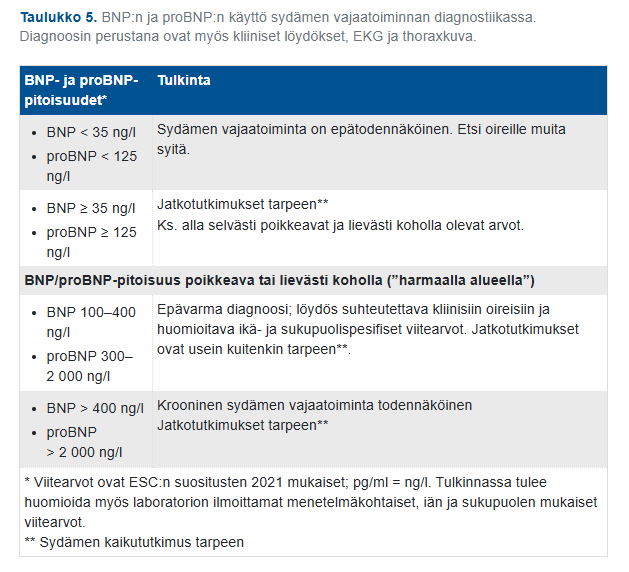
4.1.19 40-vuotias mies harrastaa aktiivisesti liikuntaa ilman sydänoireita. Valtimotautiriskitekijänä tupakointi, hyperkolesterolemia ja sukurasite. Nyt verenpaine koholla (keskiarvo 158/90 mmHg) ja potilas tiedustelee riskiään sairastua valtimotautiin. Mitä teen?
- Määritän valtimotautiriskin Finriski -laskurilla tai SCORE- taulukolla
- Lasken sepelvaltimotaudin ennakkotodennäköisyyden iän, sukupuolen ja rintakivun tyypin mukaan
- Lähetän sepelvaltimoiden tietokonetomografiaan sepelvaltimotaudin poissulkemiseksi
- ähetän rasitus-EKG tutkimukseen sepelvaltimotaudin poissulkemiseksi
aOireettoman henkilön riskiä sairastua sepelvaltimotautiin voidaan arvioida FINRISKI-laskurissa tai SCORE(2)-laskurilla. Näiden perusteella voidaan ohjata riskitekijöiden hoidon tavoitteita (esim. LDL-tavoite) ja riskilaskurit soveltuvat myös hyvin potilaan motivointiin riskitekijöiden hoidossa.
FINRISKI-laskurilla voi laskea riskin sairastua sydäninfarktiin tai vakavaan aivoverenkiertohäiriöön seuraavan kymmenen vuoden aikana. Laskuri kertoo sairastumisriskin prosentteina. SCORE-laskurilla voidaan arvioida, millainen on henkilön valtimotautikuoleman vaara 10 vuoden kuluessa.
b: Sepelvaltimotaudin ennakkotodennäköisyyden laskemista käytetään silloin, kun potilaalla on rintakipua ja lääkäri arvioi, johtuuko oire sepelvaltimotaudista. Koska tällä potilaalla ei ole rintakipuja tai muita oireita, tämä työkalu ei sovellu tilanteeseen.
c ja d: Oireetonta, aktiivisesti liikkuvaa ihmistä ei tule rutiininomaisesti lähettää poissulkeviin jatkotutkimuksiin
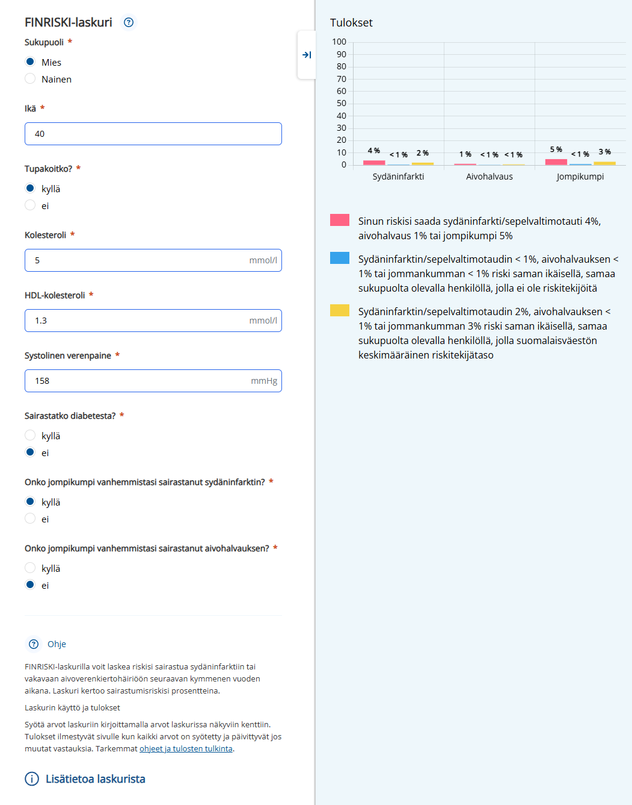
4.1.20 Akuutti vajaatoimintapotilas on tajuissaan, mutta uupunut voimakkaan hengenahdistuksen vuoksi. Happisaturaatio on matala lisähapesta huolimatta. Mitä seuraavaksi?
- Nukutan ja kytken potilaan respiraattoriin
- Kokeilen ylipainenaamarihoitoa
- Määrään lisää morfiinia
- Aloitan inotrooppisen, supistumisvireyttä parantavan lääkkeen, kuten noradrenaliinin tai levosimendaanin
bVoimakkaasta hengenahdistuksesta kärsivälle, uupuneelle akuutille sydämen vajaatoimintapotilaalle eli siten keuhkopöhöpotilaalle, jolla tavallinen lisähappi ei riitä korjaamaan happisaturaatiota, ensisijainen hoitomuoto on kajoamaton ylipainehengityshoito (NIV-hoito, yleisimmin CPAP- tai BiPAP-naamarihoito).
Yleensä siis hypokseemisen hengitysvajauksen hoidossa ei käytetä NIV-hoitoa, vaan lisähappea, mutta yleisin selitys sille, että NIV (BIPAP, 2PV) tai CPAP auttaa kardiogeenisessä keuhkopöhössä on se, että positiivinen paine puhaltaa ödeemiset alveolit auki, työntää ödeemanesteen takaisin keuhkokapillaarien kautta verenkiertoon ja siten auttaa kaasujenvaihdossa. Voisi ajatella positiivisen paineen keuhkoissa toimivan kuten kompressiosukkien jaloissa, mutta vain sisältäpäin keuhkoista katsoen.
On myös muitakin mekanismeja, miten positiivinen paine auttaa kardiogeenisessä keuhkopöhössä: koholla oleva rintaontelonpaine vähentää veren paluuta oikeaan eteiseen (painegradientti positiivinen rintaontelon ja vatsa-ontelon välillä pallean yli) -> esikuorma (preload) vähenee. Sama gradientti myös auttaa verta kulkemaan vatsa-aorttaa alaspäin -> jälkikuorma (afterload) laskee. Lisääntynyt rintaontelon paine myös vähentää vasemman kammion transmuraalista painetta (erotusta kammion sisäisen paineen ja sen ympäristön kanssa) -> kirjaimellisesti puristaa LV:ta ja vähentää työkuormaa -> vähentää hapen tarvetta (voi kuitenkin pienentää iskutilavuutta)
a: Intubaatio ja invasiivinen respiraattorihoito on viimesijainen keino. Intubaatioon siirrytään vasta, jos ylipainenaamarihoito (NIV) epäonnistuu, potilaan tajunta hämärtyy tai hengitys lamaantuu kokonaan.
c: Morfiinia on perinteisesti käytetty keuhkopöhöpotilaan hätäisyyden ja hengenahdistuksen tunteen helpottamiseen. Nykyisin sen käyttöä kuitenkin vältetään tai se rajataan vain poikkeustapauksiin (vaikea rintakipu tai sietämätön ahdistus), koska morfiini voi lamata hengityskeskusta ja lisätä intubaation tarvetta.
d: Inotriooppeja (kuten levosimendaania) tai vasopressoreita (kuten noradrenaliinia) käytetään silloin, kun potilas on kardiogeenisessä shokissa eli verenpaine on matala ja elinten verenkierto on uhattuna. Tehtävänannossa ei mainittu matalaa verenpainetta tai shokin merkkejä – pelkkään keuhkopöhöön ja hypoksiaan (happivajeeseen) vastataan ensisijaisesti hengitystuella ja furosemidilla (nesteenpoisto).4.1.21 ACE-estäjät, mikä pitää paikkansa?
- Suolarajoitus ja samanaikainen diureettihoito lisäävät ACE-estäjähoidon tehoa
- ACE-estäjät eivät sovellu diabeetikon verenpainetaudin hoitoon
- ACE-estäjät sopivat käytettäväksi raskauden aikana
- Enalapriilin annosta ei ole tarpeen muuttaa munuaisten vajaatoiminnassa
aRAA-järjestelmä aktivoituu, kun suolan saantia rajoitetaan tai kun potilas käyttää nesteenpoistolääkkeitä (diureetteja), koska elimistö pyrkii estämään verenpaineen laskun ja nestehukan. ACE-estäjät nimenomaan salpaavat tämän RAA-järjestelmän toimintaa estämällä angiotensiini 1:n konvertoitumista angiotensii 2:ksi ACE-entsyymin kautta. Tämän takia ACE-estäjien ja diureettien/suolarajoituksen yhdistelmä on tehokkaampi ja vähentää haittavaikutuksia monoterapiaan verrattuna.
b: Päinvastoin, ACE-estäjät (ja vaihtoehtoisesti ATR-salpaajat) ovat juuri ensisijaisia lääkkeitä diabeetikon verenpainetaudin hoidossa. Ne suojaavat munuaisia ja vähentävät valkuaisaineen erittymistä virtsaan (mikroalbuminuriaa) eli hidastavat diabeettisen nefropatian etenemistä.
c: ACE-estäjät ovat vasta-aiheisia raskauden aikana, koska ne ovat teratogeenisiä. Ne voivat aiheuttaa sikiölle vakavia vaurioita, kuten sikiön munuaisten vajaatoimintaa, lapsiveden vähäisyyttä (oligohydramnion), kallon luutumishäiriöitä, keuhkon kehityshäiriöitä ja jopa sikiökuoleman
d: Enalapriili (ja muut ACE-estäjät) erittyy elimistöstä pääasiassa munuaisten kautta. Jos potilaalla on munuaisten vajaatoiminta, lääkkeen poistuminen hidastuu ja sitä voi kertyä elimistöön. Tämä lisää liiallisen verenpaineen laskun ja vaarallisen kaliumin nousun (hyperkalemian) riskiä. Tämän vuoksi annosta pitää pienentää tai annosväliä pidentää munuaisten vajaatoiminnassa.4.1.22 Millä seuraavista riskilaskureista voidaan arvioida sydäninfarktin riskiä potilaan riskitietojen perusteella?
- HEMORRHAGES score
- HAS-BLED score
- FinRiski -laskuri
- ATRIA score
cOireettoman henkilön riskiä sairastua sepelvaltimotautiin voidaan arvioida FINRISKI-laskurissa tai SCORE(2)-laskurilla. Näiden perusteella voidaan ohjata riskitekijöiden hoidon tavoitteita (esim. LDL-tavoite) ja riskilaskurit soveltuvat myös hyvin potilaan motivointiin riskitekijöiden hoidossa.
FINRISKI-laskurilla voi laskea riskin sairastua sydäninfarktiin tai vakavaan aivoverenkiertohäiriöön seuraavan kymmenen vuoden aikana. Laskuri kertoo sairastumisriskin prosentteina. SCORE-laskurilla voidaan arvioida, millainen on henkilön valtimotautikuoleman vaara 10 vuoden kuluessa.
a ja b: HEMORR₂HAGE-scorea ja HAS-BLED-scorea voidaan käyttää merkittävän vuodon riskin arvioimiseen eteisvärinäpotilailla
d: ATRIA-scorea voidaan käyttää stroken riskin arvioimiseen eteisvärinäpotilailla. Enemmän tähän käytetään kylläkin CHA2DS2VA-pisteytystä
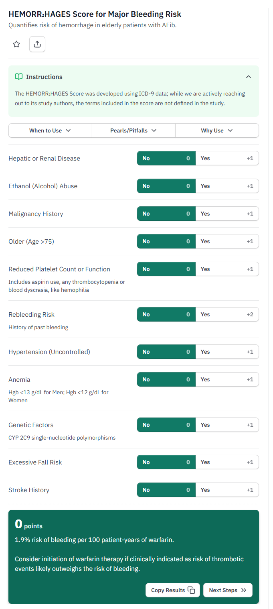
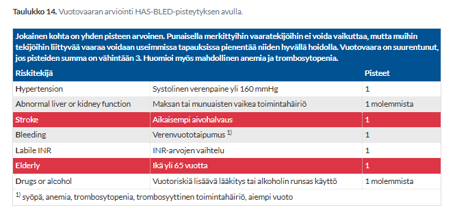
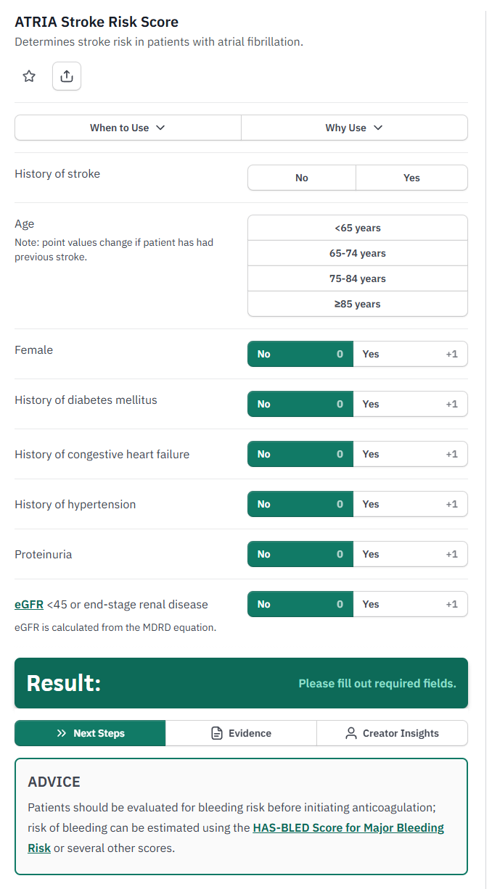
4.1.23 Mikä seuraavista on oikein potilaalla, jolla on juuri todettu keskivaikea aorttaläppäahtauma, mutta ei tähän liittyviä oireita?
- Kontrolloin ultraäänitutkimuksella läppäahtauman vaikeusasteen vuoden kuluttua
- Statiinihoidolla ja valtimotaudin riskitekijöiden hoidolla on mahdollista hidastaa ahtauman etenemistä
- Äkkikuoleman vaara on kohtalaisesti suurentunut
- Kontrolloin ultraäänitutkimuksella läppäahtauman vaikeusasteen vain jos potilaalle tulee läppävian oireita tai kliiniset löydökset muuttuvat
aOireetonta aorttaläppäahtaumaa sairastavaa potilasta on seurattava säännöllisesti, sillä ahtauma on etenevä sairaus. Lievää ahtaumaa voidaan seurata yleensä kliinisesti perusterveydenhuollossa harvakseltaan ja UÄ tarkistetaan n. 3-5 vuoden välein. Kliinisessä arviossa oireet, sivuäänen muuttuminen ja EKG-muutokset ovat aiheita lähetteelle aikaisempaan ultraääneen ja leikkausharkintaan. Oireisen aorttaläppäahtauman ennuste on merkittävän huono ja tekoläpän asennus parantaa ennustetta ja usein elämänlaatuakin.
Keskivaikeaa ahtaumaa seurataan yleensä ESH:ssa ultraäänellä 6kk-2 vuoden välein, jos potilas on hoidon (TAVI/leikkaus) kandidaatti. Seurannan tarkoituksena on havaita ahtauman vaikeutuminen ajoissa ennen kuin sydänlihakseen ehtii tulla pysyviä vaurioita.
Yleensä tekoläpän asennus on aiheellinen vaikea-asteisessa stenoosissa (joskus kohtalaisessakin, jos ei ole muuta selittävää oireille tai sydämen vajaatoiminnalle) heti oireiden ilmaannuttua, mutta toimenpide voi olla indikoitua oireettomallakin potilaalla, jos ejektiofraktio on < 50 % tai rasituskoe on poikkeava (todetaan oireita, selvästi odotettua huonompi suorituskyky tai verenpaine laskee alle lähtötason). Jos pienen toimenpideriskin potilailla oireettoman stenoosin hoitoa voidaan myös harkita, jos esim: 1) stenoosisuihkun huippuvirtaus on > 5.0 m/s, 2) natriureettisen peptidin (NTproBNP) pitoisuus on kontrolloidusti voimakkaasti kohonnut, 3) läppä on vahvasti kalkkeutunut ja on viitteet stenoosin nopeasta etenemisestä (nopeushuippu > 4 m/s ja kasvuvauhti seurannassa > 0,3 m/s/vuosi), 4) Vasemman kammion ejektiofraktio on < 55% läppävian takia. Tekoläppäleikkausta voidaan myös harkita tehtävän oireettomalla potilaalla, jos potilaalle ollaan tekemässä jokin muu sydänleikkaus tai aortan korjausleikkaus muutenkin -> tehdään samalla reissulla.
Aorttastenoosin vaikeusasteen gradeerauksessa käytetään muutamia ultraäänellä mitattavia arvoja, joista tärkeimmät ovat aorttaläpän avautumispinta-ala (AVA), keskigradientti aorttaläpän yli ja aorttavirtauksen huippunopeus.
Aorttastenoosin hoito on ensisijaisesti tekoläpän asennus joko sitten leikkauksella (SAVR = Surgical Aortic Valve Replacement) tai katetriteitse. Perkutaaninen aorttaläppäproteesin asennus katetriteitse eli TAVI (Transcatheter Aortic Valve Implantation = TAVR = Transcatheter Aortic Valve Replacement) on nykyään yleensä ensisijainen hoitokeino iäkkäiden (>75v) potilaiden hoidossa ja menetelmän käyttö lisääntyy myös 65–75-vuotiailla ja sitäkin nuoremmilla aorttastenoosipotilailla. Toimenpiteessä viedään yleensä reisivaltimon kautta uusi biologinen tekoläppä ahtautuneen aorttaläpän paikalle.
b: Vaikka aorttaläpän kalkkeutumisen mekanismit muistuttavat ateroskleroosia, niin lääkehoidolla ei voida hidastaa aorttastenoosin etenemistä.
c: Aorttaläppäahtaumaan liittyy äkkikuoleman riski vasta silloin, kun tauti on vaikea ja oireinen. Oireettomilla potilailla, joilla on keskivaikea tai jopa vaikea ahtauma, äkkikuoleman riski on pieni (alle 1 % vuodessa). Vaara kasvaa merkittävästi vasta, kun potilaalle kehittyy oireita (kuten rintakipua, hengenahdistusta tai synkopeekohtauksia) tai ejektiofraktio laskee.
d: Pelkkään oirelähtöiseen seurantaan ei saa tuudittautua, koska ihmiset sopeuttavat usein alitajuisesti elämäntapansa ja fyysisen rasituksensa tason sydämen suorituskykyyn, jolloin he voivat olla pitkään “oireettomia”, vaikka tauti olisi edennyt jo vaikeaksi. Säännöllinen objektiivinen mittaus (UKG) on välttämätön.


4.1.24 Mikä seuraavista El ole endokardiitin diagnostinen pääkriteeri?
- Uusi läppävuoto ultraäänessä
- IV-huumeiden käyttö
- Läppävegetaatio ultraäänessä
- Positiivinen veriviljelylöydös
bIV-huumeiden käyttö on yksi endokardiitin sivukriteereistä ja sisältyy “riskitekijät”-kriteerin alle.
Endokardiitin diagnostiikassa hyödynnetään Duken kriteerejä, jotka koostuvat kahdesta pääkriteeristä (major criteria) ja viidestä sivukriteeristä (minor criteria). Jotta endokardiitin diagnoosi on varma, on oltava 2 pääkriteeriä tai 1 pääkriteeri + 3 sivukriteeriä tai 5 sivukriteeriä. (Mahdollinen endokardiitti on 1 pää + 1-2 sivu tai 3-4 sivu)
- Endokardiitille tyypillinen veriviljelylöydös eli kahdessa 12h välillä otetussa veriviljelyssä tyypillinen endokardiitin aiheuttaja (suun streptokokit, Streptococcus gallolyticus (aikaisemmin S. bovis), HACEK-ryhmä, S. aureus, enterokokki) tai vähintään kolme positiivista neljästä veriviljelynäytteestä (1. ja viimeisen näytteen välillä väh. 1h) tai yksi veriviljely on positiivinen C. burnetiille/faasin I vasta-ainetitterit ovat >1:800
- Endokardiitti jossain kuvantamistutkimuksessa (TTE, TEE, CT, PET, SPECT)
- Altistava tekijä (esim. tekoläppä, aiempi endokardiitti, i.v.-huumeiden käyttö)
- Kuume (yli 38 astetta)
- Verenkiertohäiriöt (kuvantamisessa tai kliinisesti todettavat valtimoemboliat, septiset keuhkoinfarktit, infektioosit aneurysmat, kallonsisäinen tai sidekalvon verenvuoto, Janewayn leesiot)
- Immunologiset löydökset (glomerulonefriitti, Oslerin kyhmy, Rothin täplä, reumafaktori)
- Positiivinen veriviljely, joka ei täytä pääkriteerin määritelmiä, tai serologinen osoitus aiheuttajasta
Kriteereissä on kuitenkin useita ongelmakohtia; esimerkiksi veriviljelyt. Veriviljely voi siis olla negatiivinen endokardiitissa, varsinkin jos näytteet on otettu antibiootin aloittamisen jälkeen. Tämän ulkopuolellakin veriviljelyt voivat olla usein negatiivisia, mikä häiritsee hoidon kohdentamista merkittävästi. Jopa 10-20% tapauksista on veriviljelynegatiivisia.
Toinen ongelmakohta on skleroottiset läpät, jotka häiritsevät vegetaatioiden tunnistamista.
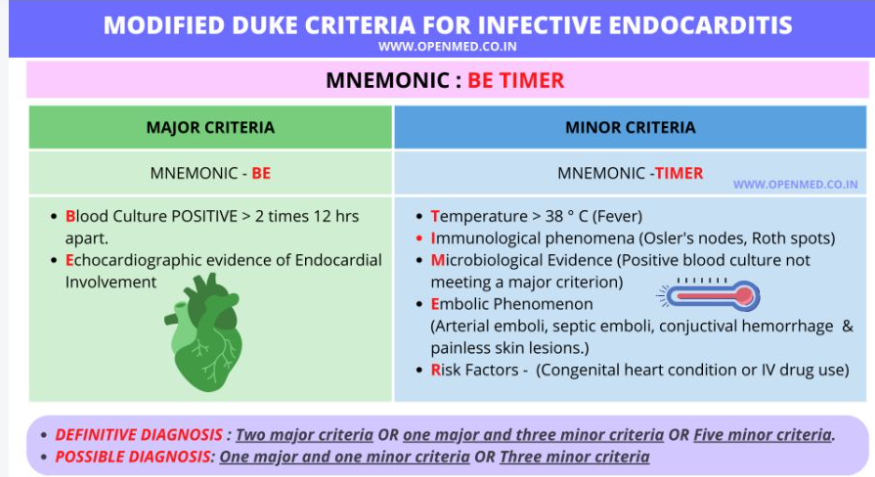
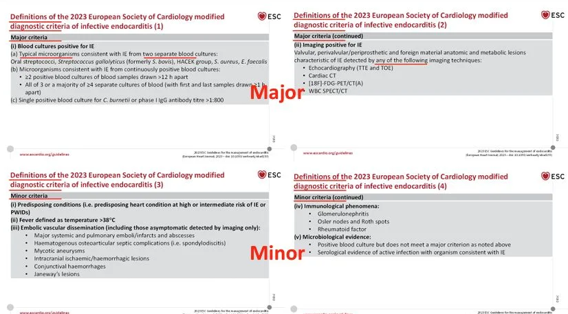
4.1.25 Iskemiamuutoksia voidaan luotettavasti arvioida EKG:sta, jossa on
- Kammiotahdistinrytmi
- Yli 1mm ST-lasku levossa
- Oikea haarakatkos
- Wolff-Parkinson-White oireyhtymä
cOikea haarakatkos (RBBB) viivästyttää oikean kammion sähköistä aktivaatiota, mikä voi kyllä aiheuttaa ST-T-muutoksia (alas viettäviä ST-segmenttejä (mahdollisesti ST-laskuakin) ja/tai T-inversioita kytkennöissä V1-V3) ja siten hieman häiritä iskemian tunnistamista. Kuitenkin varsinkin vasemmanpuoleisista kytkennöistä voidaan edelleen varsin luotettavasti arvioida iskemiaa. Vasen haarakatkos taas häiritsee yleensä iskemian diagnostiikkaa merkittävästi ja monissa lähteissä sanotaan tulkitsemista epäluotettavaksi (tosin Smith-Modifoidut Sgarbossa-kriteerit ovat arvostettavan tarkat ja herkät).
a: Kammiotahdistin tahdistaa sydäntä tyypillisesti oikean kammion kärjestä. Tämä muuttaa kammioiden aktivaatiojärjestystä täysin ja luo EKG:hen vasenta haarakatkosta (LBBB) muistuttavan kuvan ja siten häiritsee iskemian arvioimista.
b: Jos potilaalla on jo levossa valmiiksi merkittävä (yli 1 mm) ST-lasku (syynä esimerkiksi vasemman kammion liikakasvu, digoksiinilääkitys tai perusiskemia), ST-tason lisämuutosten luotettava arviointi on vaikeaa.
d: WPW-oireyhtymässä sähköimpulssi kulkee normaalin johtoradan ohi ylimääräistä oikorataa pitkin (yleensä Kentin rata eli eteisen ja kammion välinen rata yleisimmin sydämen vasemmalla puolella), mikä aiheuttaa kammioiden ennenaikaisen aktivaation (pre-eksitaatio, joka näkyy delta-aaltona). Tämä poikkeava depolarisaatio aiheuttaa väistämättä laajoja, toissijaisia ST-T-muutoksia, jotka tekevät iskemian diagnosoinnista EKG:n perusteella epäluotettavaa. WPW:lle on tyypillistä myös mm. vanhemmiksi infarkteiksi väärin tulkittavat pseudo-Q-aallot inferiorisissa kytkennöissä ja prominentit R-aallot V1-V3. Noin 70% potilaista todetaan jonkinlainen pseudo-infarkti-kuvio.4.1.26 Mikä seuraavista sopii parhaiten kuvaamaan NYHA III-tasoista sydämen vajaatoimintaoireistoa?
- Oireita levossa
- Oireita 2 kerrosvälin porrasnousussa
- Oireita ylämäkeen noustessa
- Oireita 4 kerrosvälin porrasnousussa
cYksinkertaisin tapa kuvata sydämen vajaatoiminnan vaikeusasetta on NYHA-luokitus (New York Heart Association), jossa oireiden vaikeusasteen perusteella sydämen vajaatoimintapotilaat jaetaan neljään luokkaan. Luokitus perustuu lääkärin subjektiiviseen arvioon potilaan oireista ja vaikeammat oireet (NYHA III–IV) korreloivat selkeästi potilaan huonompaan ennusteeseen.
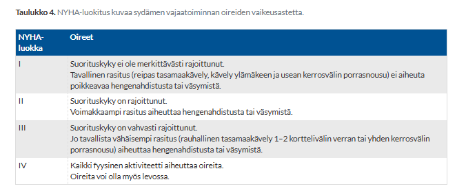
4.1.27 Sepsiksessä verikokeista
- alhainen trombosyyttimäärä kertoo komplikaatiomahdollisuudesta paremmin kuin leukopenia
- CRP on aina yli 40
- veriviljelyitä ei kannata ottaa jos potilas on jo saanut antibioottia
- voidaan usein havaita respiratorinen alkaloosi astrupnäytteessä
aTrombosytopenia on sepsiksessä erittäin vahva ja itsenäinen huonon ennusteen ja komplikaatioiden merkki. Se kertoo hyytymisjärjestelmän aktivoitumisesta, mikrotukoksista ja uhkaavasta tai jopa käynnissä olevasta DIC-oireyhtymästä (disseminoitunut intravaskulaarinen koagulaatio), joka on vakava sepsiksen komplikaatio. Valkosolumuutokset (kuten leukopenia tai leukosytoosi) ovat osa elimistön yleistä tulehdusvastetta, mutta ne vaihtelevat paljon eivätkä ennusta elinvauriota tai kuolleisuutta yhtä luotettavasti. Tämän vuoksi trombosyyttitaso on otettu mukaan elinvauriota mittaavaan SOFA-pisteytykseen (Sequential Organ Failure Assessment), mutta valkosolujen määrää siinä ei ole.
b: Sepsis on kliininen diagnoosi, eikä mikään yksittäinen laboratoriotulos ole siinä “aina” tietyn rajan yli. Sepsiksen alkuvaiheessa (erityisesti jos oireiden alkamisesta on vasta vähän aikaa) tai iäkkäillä ja immuunipuutteisilla potilailla CRP voi hyvinkin olla matala tai jopa viitealueella. Matala CRP ei siis koskaan sulje pois sepsistä.
c: Vaikka antibioottihoito heikentää veriviljelyiden herkkyyttä, veriviljelyt tulee silti aina ottaa, jos niitä ei ole ennen lääkkeen aloitusta ehditty ottaa. Veriviljely voi edelleen jäädä positiiviseksi, jos kyseessä on käytetylle antibiootille vastustuskykyinen bakteeri tai jos lääkepitoisuus veressä ei ole vielä riittävä. Löydös on kriittisen tärkeä hoidon kohdentamiseksi myöhemmin.
d: Sepsikselle tyypillisin ja vakavuutta heijastava löydös astrupissa on metabolinen asidoosi. Sepsiksessä kudosten hapensaanti heikkenee, mikä johtaa anaerobiseen aineenvaihduntaan ja laktaatin nousuun. Tämä happamoittaa veren metabolisesti. Sepsiksen alkuvaiheessa mahdollinen hyperventilaatio voi kyllä hetkellisesti aiheuttaa respiratorista alkaloosia, mutta taudin edetessä ja vakavoituessa metabolinen asidoosi on hallitseva ja diagnostisesti merkittävämpi löydös.

4.1.28 VTI:n
- Tavallisin aiheuttaja on Enterococcus faecium (E.faecium)
- Aiheuttajabakteerit pääsevät rakkoon yleensä munuaisten kautta tilapäisen bakteremian seurauksena
- Riski ei kasva yhdynnän seurauksena
- Riski kasvaa diabeetikoilla
dDiabetesta sairastavilla on merkittävästi kohonnut riski saada virtsatietulehduksia, ja heillä infektio uusiutuu ja etenee vakavammaksi (kuten pyelonefriitiksi eli munuaisallastulehdukseksi) herkemmin kuin muilla. Tämä johtuu useasta tekijästä: diabetekseen liittyvästä immuunivasteen heikentymisestä, virtsan korkeasta sokeripitoisuudesta (joka toimii hyvänä alustana bakteerien kasvulle) sekä mahdollisesta diabeettisesta neuropatiasta johtuvasta rakon tyhjenemishäiriöstä (virtsaretentiosta).
a: Tavallisin aiheuttaja on E. coli. Toiseksi yleisin nuorilla naisilla on Staphylococcus saprophyticus. Enterokokkikin kyllä on mahdollinen aiheuttaja, mutta useammin sairaalasyntyisten tai monimutkaisten tapausten yhteydessä
b: Aiheuttajabakteerit ovat yleensä suolistoflooraa, jotka pääsevät yleensä välilihan kautta virtsaputkeen ja siitä nousevasti rakkoon. Hematogeenisesti munuaisiin ja sieltä virtsateihin leviävä infektio on harvinainen poikkeustapaus
c: Heitellyksi tuleminen on yksi merkittävimmistä nuorten naisten kystiitin (virtsarakkotulehduksen) riskitekijöistä. Mekaaninen liike helpottaa bakteerien siirtymistä ja nousemista lyhyttä virtsaputkea pitkin virtsarakkoon4.1.29 Avohoidossa alkanut sepsis
- On virtsatieoireisella potilaalla tavallisimmin E. colin, Klebsiellan tai enterokokin aiheuttama
- On noin 10%:lla sienen (tavallisesti Candida albicans) aiheuttama (sienisepsis)
- On E. colin jälkeen tavallisimmin A-streptokokin aiheuttama
- Useammin meningokokin kuin pneumokokin aiheuttama
aNämä ovat myös yleisimpiä virtsatieinfektioiden aiheuttajia (E. coli on yleisin), ja siten yleisimpiä ns. urosepsiksen (VTI etenee munuaisiin ja sieltä verenkiertoon) aiheuttajia.
b: Riippuu vähän lähteestä, mutta candidasepsikset eivät ole näin yleisiä - varsinkaan avohoidosta saapuvalla, aiemmin terveellä potilaalla. Sienisepsis on tyypillisesti pitkään sairaalassa tai tehohoidossa olleiden, laaja-alaista suonensisäistä antibioottihoitoa saaneiden, keskustiehyttä käyttävien tai voimakkaasti immuunipuutteisten ongelma.
c: Avohoidosta alkaneessa sepsiksessä kaikkien potilaiden kohdalla E. colin jälkeen yleisimmät aiheuttajat ovat yleensä pneumokokki (Streptococcus pneumoniae) ja Staphylococcus aureus. A-streptokokki (Streptococcus pyogenes) voi aiheuttaa erittäin rajun, toksisen shokkioireyhtymän (STSS) tai infektiolähtöisen sepsiksen (usein iho- tai pehmytkudosinfektion kautta), mutta se on tilastollisesti huomattavasti harvinaisempi kuin pneumokokki tai S. aureus.
d: Pneumokokki on yksi avohoitoisen sepsiksen ja vaikean keuhkokuumeen yleisimmistä aiheuttajista kaikissa ikäryhmissä. Meningokokki (Neisseria meningitidis) on nykyään tehokkaan rokotusohjelman ja yleisen epidemiologian vuoksi Suomessa suhteellisen harvinainen (tapauksia todetaan vain 20 vuodessa). Se on kuitenkin vieläkin pneumokokin rinnalla nuorten ja nuorten aikuisten yleisin bakteerimeningiitin aiheuttaja.4.1.30 Potilaalla on veriviljelyissä todettu Stafylococcus aureus. Miten kannattaa toimia?
- Tilata lisää veriviljelyitä, jotta nähdään onko löydös todellinen vai kontaminaatio.
- Aloittaa antibioottihoito ja tilata UKG endokardiitin poissulkumielessä
- Aloittaa vähintään kahta stafylokokkeihin tehoavaa antibioottia kunnes tiedetään antibioottiherkkyyksiä
- Pidetään löydöstä ihokontaminaationa
bAureus-sepsis on yleensä nopeasti etenevä ja hoitamattomana henkeä uhkaava. Infektioporttina toimii yleensä iholeesiot, verisuonikanyylit tai hampaisto. Sepsistä yleisesti epäiltäessä tulee ottaa veriviljelyt ja aloittaa niiden jälkeen antibioottihoito (yleensä vahvassa epäilyssä empiirisesti ennen vastauksia). Aureus-sepsiksessä veriviljely ilmoitetaan positiiviseksi yleensä varsin pian (n. 1vrk sisään); alustavana vastauksena voi lukea gram-positiivinen kokki, todennäköinen stafylokki.
Verenkiertoon päässyt S. aureus aiheuttaa usein ns. syviä fokuksia, kuten endokardiitin, pneumonian, spondylodiskiitin, osteomyeliitin, lihas- ja sisäelinabskesseja yms. Kaikille S. aureus -sepsispotilaille kuuluu sydämen ultraäänitutkimus (UKG, ultrakardiografia) ja OPG-kuvaus (ortopantomografia eli hampaiston röntgen). Kliinisen kuvan mukaan tarvittaessa muut (kuvantamis)tutkimukset, kuten vartalon TT.
a ja d: Toisin kuin koagulaasinegatiiviset stafylokokit (kuten Staphylococcus epidermidis), Staphylococcus aureus on veriviljelyssä suhteellisen harvoin pelkkä viaton ihokontaminaatio. Vaikka kyseessä olisi vain yksi positiivinen veriviljelypullo, löydökseen on aina suhtauduttava todellisena ja vakavana infektiona. Hoidon aloitusta ei kannata jäädä odottamaan tai viivästyttämään uusien viljelyiden tilaamisella (uusintaviljelyitä kyllä otetaan hoidon aikana seurantaan, mutta vasta kun hoito on jo käynnistetty).
c: Hoito aloitetaan yleensä yhdellä tehokkaalla kapeakirjoisella beetalaktaamiantibiootilla, koska Suomessa aureus on yleensä oksasilliinille herkkä. Ensisijaisesti käytössä on suonensisäinen kloksasilliini 2g x 6 (penisilliiniallergiassa kefuroksiimi 1.5g x4 iv.; beetalaktaamiallergisille yleensä vankomysiini (samoin MRSA:ssa)), joka tehoaa erinomaisesti valtaosaan suomalaisista S. aureus -kannoista. P.o.-jatkohoitoon siirtyessä valitaan yleensä flukloksasilliini 750-1000mgx3. S. aureus -bakteremioissa olisi kuitenkin aina konsultoitava infektiolääkäriä.
Yleensä siis aloitetaan monoterapialla. Infektiolääkäri voi harkinnan mukaan liittää hoitoon akuuttivaiheen jälkeen esim. rifampisiinin (yleensä 600 mg x1 po) vierasaineinfektioissa.
4.1.31 Stafylococcus aureus veriviljelyssä
- on yleensä kontaminaatio iholta näytteenoton yhteydessä
- ei vaadi välttämättä suonensisäistä antibioottihoitoa vaan tapauskohtaisesti potilas voidaan hoitaa myös kotona
- tarkoittaa yleensä käytännössä vähintään 2 viikon mittaista suonensisäisen antibioottihoidon tarvetta
- ei yleensä herkästi liity absessimuodostukseen
cHoidon aloituksen jälkeen veriviljelyiden puhdistumista seurataan 1-2 päivän välein. Hoidon keston lasketaan alkavan siitä päivästä, kun veriviljelyissä ei enää ole kasvua. Jos veriviljelyt pysyvät positiivisina, on syytä epäillä, että jossain on fokus, jota ei vielä ole löydetty.
a: Staphylococcus aureus on veriviljelyssä suhteellisen harvoin pelkkä viaton ihokontaminaatio.
b: S. aureus -sepsis on yleensä vaikea ja potilas on selkeästi sairas. Hoito vaatii iv-antibioottihoitoa ja hoito yleensä toteutetaan sairaalassa. Hyvässä tilanteessa kotisairaalassa kyllä voidaan joskus potilaita hoitaa.
d: S. aureus on tunnettu sen taipumuksesta muodostaa abskesseja
4.1.32 75-vuotiaalla perusterveellä potilaalla kuume ja yskä yhden vuorokauden ajan. Thorax-rtg kuvassa on pneumonia, joka sopisi olemaan tavallinen lohkokeuhkokuume. Keskustelee asiallisesti ja normaalisti, hengitysfrekvenssi 25/min, RR 105/75, p 95/min. Tax 38.8.
- Potilas on viisainta ottaa sairaalaan ja aloittaa iv antibiootiksi kefuroksiimi.
- Potilas voidaan hyvin hoitaa suun kautta otettavalla antibioottikuurilla, joksi valitaan amoksisilliini.
- Aiheuttaja on todennäköisesti mykoplasma. Aloitetaan kombinaatiohoito amoksisilliini+doksisykliini po. Pärjännee kotona, mutta palaa herkästi, jos vointi huononee.
- Tilannetta voidaan seurata vielä koska kuumeilua vasta yhden vuorokauden ajan. Voi olla viruspneumonia ainoastaan.
aDS-CRB-65-työkalulla laskettuna potilaalla on 1 piste, joka tulee hänen iästään. Monissa ohjeissa on mainittu periaate, että pelkästään iän perusteella ei usein tarvitse ottaa potilasta sairaalahoitoon (yleensä siis DS-CRB-65 pisteitä 1 tai enemmän -> kannattaa vähintäänkin harkita sairaalahoitoa), mutta huomioiden potilaan jo korkea ikä (>75) ja muut vitaalit, voisi ajatella, että ehkä kotiutuminen ei ole paras vaihtoehto. Verenpaine on hieman matala, hengitysfrekvenssi koholla ja kuume korkea; vanhalla potilaalla nämä altistavat mm. kaatumisille ja siten komplikaatioille.
Päätökseen tietysti käytännössä vaikuttaisi myös merkittävästi potilaan kotiympäristö ja tukijoukot.
b: Ensisijainen lääke suun kautta annosteltavaan hoitoon on kylläkin amoksisilliini 750 mg – 1 g x 3 p.o. Mallivastauksissa potilas kuitenkin halutaan ottaa sairaalahoitoon, joten vastaus on väärin.
c: Mykoplasma aiheuttaa tyypillisesti nuorilla esiintyvää interstitiaalista (atyyppistä) keuhkokuumetta, jossa rtg-kuvassa näkyy läiskikkäitä varjostumia. Tämän potilaan lohkokeuhkokuume (lobaalipneumonia) viittaa nimenomaan perinteisempään bakteeriin (pneumokokkiin), jolloin laajaa kombinaatiohoitoa doksisykliinin kanssa ei tarvita suoraan alussa.
d: Röntgenvarmistetun ja lohkokeuhkokuumeeksi sopivan pneumonian hoitona on aina välitön antibioottilääkitys.

4.1.33 Potilas tiedetään ennestään olevan ESBL E. colin kantaja. Nyt selkä/kylkikipua ja kuumetta ja virtsassa tulehdukseen sopiva löydös. Päädytään aloittamaan iv antibiootti. Potilaalla ei kuitenkaan ole septinen taudinkuva.
- Todennäköisempää on muun kuin ESBL kannan aiheuttama infektio. Voidaan aloittaa iv kefuroksiimi.
- Koska aloitetaan iv antibiootti, on syytä aloittaa suoraan myös ESBL kannat kattava karbapeneemi.
- Iv antibioottivalintani on fluorokinoloni, koska se on ykkösvalinta ESBL E. colin ollessa aiheuttajana
- Odotan virtsaviljelyn vastauksen ja aloitan suunnatun hoidon sitten kun tiedetään onko aiheuttajana ESBL kanta vai ei.
bMallivastauksissa wikissä on merkattu vastaukseksi a, mutta nykysuositusten mukaan ESBL-kantajien pyelonefriiteissä (potilaalla kuumetta ja selkä-/kylkikipua) empiirinen hoito on ertapeneemi 1g 1 iv. Infektiolääkärin konsultaation jälkeen voidaan myös päätyä johonkin toiseen ESBL-tehoa omaavaan suonensisäiseen lääkkeeseen kuin karbapeneemiin. Empiirinen hoito vaihdetaan myöhemmin kapeakirjoisemmaksi viljelytuloksen mukaan; esim. jos kanta on herkkä fluorokinolonille tai sulfa-trimetopriimille, niitä voidaan käyttää.
ESBL-kantajien kystiittitason virtsatieinfektioissa ei tarvitse huomioida ESBL-kantajuutta, vaan voidaan käyttää samoin kuten muutenkin esim. nitrofurantoiinia tai pivmesillinaamia.
a: Kyseessä ei tietystikään aina ole ESBL-kannan aiheuttama infektio sen kantajallakaan, mutta nykysuositusten mukaan se katetaan pyelonefriiteissä
c: Fluorokinolonit (kuten siprofloksasiini tai levofloksasiini) eivät ole ESBL-infektioiden empiirisiä ykkösvalintoja. ESBL-kannat ovat poikkeuksellisen usein resistenttejä myös fluorokinoloneille. Niitä voidaan käyttää vasta myöhemmin kohdennetussa hoidossa, jos virtsaviljelyn herkkyysmääritys osoittaa kannan olevan sille herkkä.
d: Kuumeista munuaistulehdusta ei saa koskaan jättää hoitamatta viljelyvastauksia odotellessa. Vastauksen valmistuminen kestää yleensä jopa 1–2 vuorokautta. Hoitamaton ylävirtsatieinfektio voi johtaa nopeasti pysyvään munuaisvaurioon ja urosepsikseen. Hoito aloitetaan aina empiirisesti heti viljelynäytteiden ottamisen jälkeen ja sitä kavennetaan tarvittaessa myöhemmin viljelyvastauksen mukaisesti.


4.1.34 Kefalosporiini ei tehoa lähtökohtaisestikaan
- Enterobakteeriin
- Enterokokkiin
- Stafylokokkiin
- Ryhmän G-streptokokkiin
bNe yleiset bakteerit, joita kefalosporiinit eivät kata voi muistaa säännöstä LAME:
a: Enterobakteeri on gram-negatiivinen sauvabakteeri, joka kuuluu Klebsiellan ja Serratian kanssa Enterobacteriacae-heimoon. Ne ovat merkittäviä mm. hoitoon liittyvien keuhkokuumeiden ja virtsatieinfektioiden aiheuttajia.
c: Kefalosporiinit kyllä yleensä kattavat S. aureuksen (eivät vain MRSA:a).
d: GGS-infektiot viittaavat yleensä Streptococcus dysgalactiaeen, joka voi aiheuttaa mm. ihon ja pehmykudosten infektioita ja faryngiittia (kuitenkin harvinaisempi molemmissa kuin GAS eli Streptococcus pyogenes).
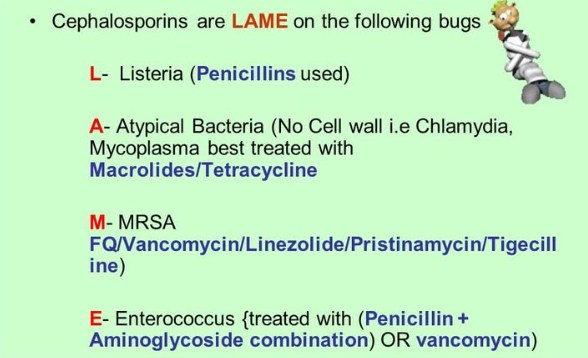
4.1.35 Oireetonta bakteriuriaa voidaan perustellusti hoitaa
- virtsatiekiven toteamisen yhteydessä
- katetroiduilla vanhuksilla
- gravidoilla riippumatta raskauden kestosta
- miehillä
cOireeton bakteriuria tarkoittaa tilannetta, jossa muuten oireettomalla potilaalla todetaan virtsan bakteeriviljelyssä toistuvasti vähintään 100 000 bakteeria/ml. Oireeton bakteriuria yleistyy nopeasti potilaiden ikääntyessä (>65v eteenpäin vallitsevuus nousee nopeasti) ja kestokatetroiduilla lähes kaikilla on bakteriuriaa (kestokatetroidun oireettoman potilaan virtsaviljely on siis käytännössä hyödytön sen suhteen, että sillä päättäisi hoidon aloittamisesta). Oireeton bakteriuria ei kuitenkaan ole sama asia kuin virtsatieinfektio! VTI-diagnoosiin siis vaaditaan viljelytuloksen lisäksi oireita.
Oireetonta bakteriuriaa on syytä etsiä ja hoitaa vain raskaana olevilta naisilta (tosin joskus harvoin hoitoa kannattaa mahdollisesti kannattaa myös harkita munuaisensiirtopotilaalle (jos kulunut alle 3 kk) ja potilaille, joille on suunniteltu urogenitaalinen toimenpide). Raskauden aikainen oireeton bakteriuria saattaa suurentaa ennenaikaisen synnytyksen riskiä, ja se suurentanee myös äidin pyelonefriitin riskiä. Oireettoman bakteriurian hoito turhaan muilla potilailla kuintekin ilmeisesti lisää oireisten virtsatieinfektioiden ilmaantuvuutta.
Oireettoman bakteriurian hoito on käytännössä samanlainen kuin komplisoitumattoman kystiitin eli lyhyt 3-7vrk antibioottikuuri. Voidaan myös käyttää samoja antibiootteja eli nitrofurantoiini, pivmesillinaami, beetalaktaamit ja fosfomysiini. Nitrofurantoiinia ei suositella synnytyksen ympärillä (rv 38-42) vastasyntyneen hemolyyttisen anemian riskin takia (riski on kylläkin äärimmäisen pieni 0.0004%). Hoidon onnistuminen yleensä kontrolloidaan virtsanäytteellä n. 1-2vk antibiootin loppumisesta.
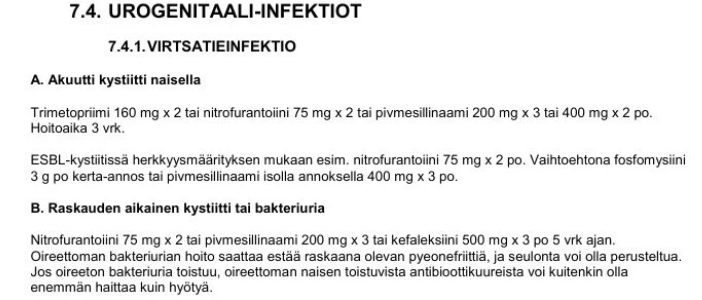
4.1.36 COVID-19 infektion hoidossa
- ei ole löydetty mitään taudinkuvan vaikeutta tai mortaliteettia vähentävää lääkitystä
- oseltamiviirista on osoitettu olevan jonkinverran hyötyä
- kortikosteroideista on osoitettu olevan hyötyä erityisesti niillä, jotka ovat lisähapen tarpeessa
- immunomodulatorisista hoidoista ei ole hyötyä
cDeksametasoni tulee aloittaa COVID-19-potilaalle vain, jos potilas on lisähapen tarpeessa (-> sairaalahoito) ja tartunnasta tai oireiden alusta on >7vrk. Lääke hillitsee infektion loppuvaiheessa kehittyvää vaarallista, hyperinflammatorista tilaa (niin sanottua sytokiinimyrskyä), joka vaurioittaa keuhkoja. Lievässä taudinkuvassa, jossa potilas ei tarvitse lisähappea, kortikosteroideista ei ole hyötyä, ja ne voivat jopa hidastaa viruksen poistumista elimistöstä.
Yleensä annoksena 6mg/vrk p.o. (mahdollista antaa myös iv) 10pv ajan tai kunnes kotiutetaan.
a: Koronan hoidossa on moniakin toimivia lääkkeitä; niin viruslääkkeitä (esim. paxlovid, remdesiviiri, tosilitsumabi) kuin kortikosteroideja ja tromboosien estossa LMWH.
b: Oseltamiviiri on influenssalääke, josta ei ole näyttöä covidin hoidossa, koska kyseessä on täysin eri virusperhe ja viruksella on eri lisääntymismekanismit.
d: Elimistön puolustusjärjestelmää ja tulehdusreaktiota muokkaavat hoidot (kuten juuri kortikosteroidit ja harvoin esim. IL-6-estäjä tosilitsumabi, jos deksametasoni ei riitä) ovat keskeinen osa vaikean COVID-19-infektion hoitoa4.1.37 HIV-tartunnan
- voi saada helposti ns. puistoneuloista pistotapaturmissa
- voi Suomessa saada lähinnä vain niiltä, jotka eivät tiedä HIV- positiivisuudestaan
- saaminen Suomessa on tapahtunut jokseenkin yhtä usein huumeiden käytön seurauksena kuin seksivälitteisesti
- voi helposti saada syljen välityksellä
b
Nykyiset HIV-lääkkeet ovat erittäin tehokkaita. Kun HIV-positiivinen henkilö on säännöllisellä lääkityksellä ja hänen verensä virusmäärä on mittausrajan alapuolella, virus ei tartu eteenpäin edes suojaamattomassa seksissä. Siksi tartunnan saaminen on Suomessa käytännössä mahdollista vain henkilöltä, jolla on toteamaan tai hoitamaton HIV-infektio – eli hän ei yleensä itse vielä tiedä tartunnastaan.
a: Ulkoilmaan tai maastoon heitetyistä huumeneuloista saatu HIV-tartunnan riski on äärimmäisen pieni. HI-virus kuolee herkästi joutuessaan kosketuksiin hapen kanssa ja neulan sisällä oleva veri kuivuu nopeasti. Suomessa ei ole tiettävästi kuvattu yhtäkään puistoneulan piston aiheuttamaa HIV-tartuntaa.
b: Suomessa ylivoimaisesti suurin osa HIV-tartunnoista saadaan suojaamattoman seksin välityksellä (heteroseksi ja miesten välinen seksi). Ruiskuhuumeiden käyttäjien keskuudessa yhteisten pistovälineiden kautta leviävä epidemia saatiin Suomessa hallintaan jo 2000-luvun taitteessa muun muassa terveysneuvontapisteiden ansiosta. Nykyisin huumeiden käytön osuus uusista tartunnoista on vain muutamia prosentteja.
d: HIV ei tartu syljen välityksellä. Syljessä on entsyymejä, jotka tappavat virukset ja syljessä ei ole tartuttavia määriä virusta, eikä HIV siten voi tarttua esimerkiksi suutelemalla tai samoista astioista syömällä tai juomalla4.1.38 Minkä ihoinfektion taustalta streptococcus pyogenes löytyy yleisimmin
- Ruusun
- Karvatupentulehduksen
- Kynsivallintulehduksen
- Paiseita
a
Erysipelas (ruusu) tarkoittaa ylädermiksen ja pinnallisten imusuonien infektiota, jonka tyypillisesti aiheuttaa A-ryhmän streptokokki. Jos tulehdus olisi märkäinen, niin yleisin aiheuttaja on yleensä S. aureus.
b: Follikuliitin yleisin aiheuttaja on S. aureus
c: Akuutin kynsivallin tulehduksen (paronykia) tavallisin aiheuttajamikrobi on S. aureus. Voi myös olla mukana suun flooraa, jos infektioon johtaneen ihorikon on aiheuttanut kynsien pureskelu. Kroonisen tulehduksen etiologia on taas monitekijäinen, eikä pelkkä infektio selitä sitä (Vaivaa tavataan erityisesti märkätyössä. Kynsivallin alta otetussa näytteessä voi kasvaa Candida albicans ja samanaikaisesti bakteereita, kuten S. aureus, pseudomonas tai E. coli, joiden kliininen merkitys on ristiriitainen)
d: Abskessien yleisin aiheuttaja on S. aureus4.1.39 Ihon rihmasieni-infektiot
- Ovat ihon normaalien hiivojen aiheuttamia, joten niitä ei tarvitse hoitaa.
- Ovat tavallisimpia sormien väleissä.
- Hoidetaan tehokkaimmin terbinafiinilla.
- Hoidetaan yleensä 1. polven kefalosporiineilla.
cRihmasienet eli dermatofyytit ovat ihon, kynsien ja karvojen sieni-infektioiden pääasiallisia aiheuttajia; aiheuttavat siis silsaa (tinea). Terbinafiini on erittäin tehokas sienilääke, joka tehoaa erinomaisesti nimenomaan rihmasieniin. Paikallishoitoon käytetään usein terbinafiinivoiteita, ja vaikeammissa/laajemmissa infektioissa tai kynsisilsassa terbinafiinia annetaan suun kautta tablettikuurina. Sisäinen lääkehoito voidaan myös yhdistää paikallishoitoon (esim. kynsisilsassa kynsilakka ja/tai voiteet), jolloin hoitotulos voi olla parempi
a: Rihmasienet eivät kuulu ihon normaaliin mikrobiflooraan, toisin kuin jotkin hiivasienet (kuten Malassezia tai Candida). Rihmasieni-infektio (tinea) on aina ulkopuolelta saatu tartunta (esimerkiksi yleisistä suihkutiloista tai eläimistä), ja se vaatii yleensä hoitoa parantuakseen ja tartuttavuuden katkaisemiseksi
b: Tavallisin ihon sieni-infektioista on tinea interdigitalis pedis eli varvasvälisilsa. Sormivälien hautuma ja sieni-infektio on huomattavasti harvinaisempi.
d: 1. polven kefalosporiinit (yleisin käytössä oleva on kefaleksiini) ovat antibiootteja, jotka tehoavat bakteereihin (erityisesti siis stafylokokkeihin ja streptokokkeihin), eivät sieniin4.1.40 Jos potilaalla alkoi äkkiä yskä ja nousi korkea kuume, mutta keuhkojen auskultaatiossa ei kuulu rahinoita:
- Keuhkokuume on poissuljettu.
- Keuhkokuume on ilmeinen, jos keuhkokuvassa on infiltraatti, vaikka CRP ei olisi korkea.
- Keuhkokuumediagnoosiin vaaditaan keuhkokuvan infiltraatti ja koholla oleva CRP-arvo.
- Keuhkokuumediagnoosi voidaan tehdä ilman keuhkokuvaa.
bPneumoniaksi sopiva thx-rtg-löydös eli uusi varjostuma on keuhkokuumeen diagnostiikassa usein käytetty tuki. Jos potilaalla on tuoreita alemman hengitystieinfektion oireita (kuten äkillinen yskä ja kuume) ja keuhkokuvassa näkyy selkeä infiltraatti, keuhkokuumediagnoosi on käytännössä selvä. CRP-arvo nousee viiveellä (vasta noin 12–24 tunnin kuluessa oireiden alkamisesta) ja voi immuunipuutteisilla tai iäkkäillä jäädä matalaksi, joten matala CRP varsinkaan taudin alkuvaiheessa ei kumoa röntgenkuvan osoittamaa diagnoosia.
a: Normaali auskultaatiolöydös ei missään nimessä sulje pois keuhkokuumetta. Jopa kolmasosalla keuhkokuumepotilaista keuhkojen kuuntelulöydös on täysin normaali, erityisesti taudin alkuvaiheessa.
c: Vaikka CRP on hyvä apuväline tulehduksen seurannassa ja erotusdiagnostiikassa, mikään yksittäinen laboratorioarvo ei ole diagnoosin ehdoton kriteeri. Jos kliininen kuva ja röntgenkuva täsmäävät, hoito aloitetaan, vaikka CRP olisi vielä normaali.
d: Keuhkokuumeen diagnoosi on mahdollinen kliinisin perustein, eikä keuhkokuvan ottaminen ole aina välttämätöntä. Tällöin kuitenkin on oltava kliiniset keuhkokuvan piirteet (esim. juuri auskultaatio ja tyypillinen oirekuva), joita tällä potilaalla ei ole (voisi hyvin olla kyseessä äkillinen keuhkoputkentulehduskin (bronkiitti).
Keuhkokuvan on todettu jossain määrin lisäävän diagnoosin tarkkuutta potilailla, joilla oireiden perusteella on syytä epäillä keuhkokuumetta. Kansainväliset asiantuntijaryhmät ovat edelleen päätyneet suosittelemaan sitä keuhkokuumeen diagnostiikassa silloin kun sen ottaminen on kohtuudella mahdollista.
Normaali keuhkokuva ei kuitenkaan sulje keuhkokuumetta täysin varmasti pois. Tämä voi johtua muun muassa siitä, etteivät taudin aiheuttamat muutokset keuhkoissa ole edenneet kyllin pitkälle näkyäkseen natiivikuvassa. Toisaalta osa keuhkokuumeeksi tulkittavista varjostumista johtuu muista sairauksista kuin keuhkokuumeesta. Makuuasennossa otettu keuhkokuva on melko epäherkkä menetelmä sekä keuhkokuumeen havaitsemisessa että sen sulkemisessa pois. Kannattaa pyrkiä ottamaan pystykuva, mikäli se potilaan voinnin kannalta on suinkin mahdollista.
Silloin kun kliinisten oireiden ja löydösten perusteella epäillään vahvasti keuhkokuumetta mutta radiologinen löydös ei vahvista asiaa, mikrobilääkehoidon tarpeeseen vaikuttavat taudinkuva ja potilaan ikä ja sairaudet. Tietokonetomografia (TT) on keuhkokuumeen diagnostiikassa harvoin tarpeen mutta auttaa epäselvissä tilanteissa ja erotusdiagnostiikassa.4.1.41 Keuhkoahtaumataudin hoidon tavoitteena on mm.
- Oireettomuus
- Sairauden etenemisen estäminen
- Keuhkojen toiminnan korjaantuminen
- Keuhkoputkien supistusherkkyyden väheneminen
bKeuhkoahtaumataudin hoidon tärkeimpiä tavoitteita on sairauden etenemisen hidastaminen ja estäminen sekä pahenemisvaiheiden vähentäminen. Tehokkain keino sairauden etenemisen pysäyttämiseksi on tupakoinnin lopettaminen, joka on myös tärkein yksittäinen COPD:n ennustetta parantava tekijä. Ainoat hoitokeinot, joiden on todettu vähentävän kuolleisuutta COPD-potilailla ovat siis tupakoinnin lopettaminen, liikunta, happihoito (vain hypokseemisilla) ja keuhkonsiirto tai emfyseemassa keuhkojen pienennysleikkaus (lung volume reduction surgery (LVRS)). Vielä minkään lääkehoidon ei ole varmasti osoitettu vaikuttavan taudin etenemiseen (vuotuinen FEV1:n pieneneminen) tai kuolleisuuteen, mutta viitteitä ICS:n hyödystä vaikeassa COPD:ssä on julkaistu. Lääkehoidolla pääasiassa siis pyritään estämään vointia romahduttavia pahenemisvaiheita ja lyhytvaikutteisilla oirelääkkeillä potilaan oloa hetkellisesti.
Kaikille COPD-potilaille kuuluvaan perushoitoon kuuluu tupakoinnin lopettaminen, säännöllinen liikunta, influenssarokote vuosittain ja pneumokokkirokotteen ottaminen sekä lyhytvaikutteinen avaava oirelääke (SABA tai SAMA varalla). COPD-potilaalle aloitetaan säännöllinen lääkitys, jos:
Säännöllinen lääkitys voidaan aloittaa joko pelkästä LAMAsta (tai LABAsta), LABA+LAMA -kaksoisavaavasta hoidosta tai jopa kolmoishoidosta (ICS + LABA + LAMA) riippuen potilaan vaikeusasteesta:
a: Keuhkoahtaumataudissa keuhkokudokseen ja ilmateihin on jo syntynyt pysyviä, korjaantumattomia rakenteellisia vaurioita. Täydellinen oireettomuus ei siksi ole realistinen tavoite pitkälle edenneessä taudissa. Hoidon tavoitteena onkin oireettomuuden sijaan oireiden lievitys ja suorituskyvyn parantaminen ja pahenemisvaiheiden estäminen
c: ahtautuminen. Toisin kuin astmassa, keuhkojen toimintakyky ei palaudu enää normaaliksi lääkehoidolla, eikä tuhoutunutta keuhkokudosta voida korjata
d: Keuhkoputkien supistusherkkyys eli hyperreaktiivisuus on tyypillistä astmalle, jossa sitä hoidetaan säännöllisellä inhaloitavalla kortikosteroidilla (ICS). ICS kyllä voi kuulua COPD:n pitkäaiakishoitoon, jos on astam-keuhkoahtaumatauti-ilmiasuun viittaavia piirteitä tai todetaan eosinofiliaa, jota ICS voisi hoitaa
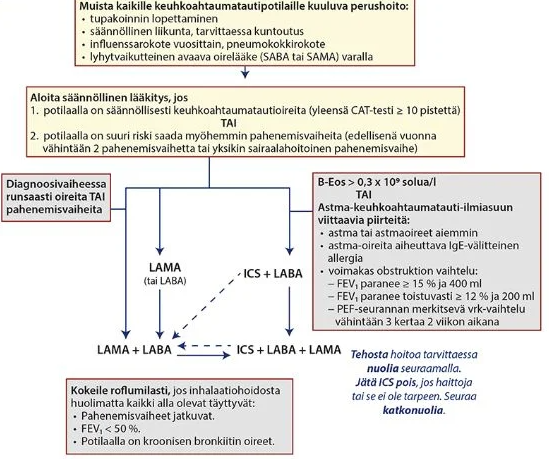
4.1.42 Mikä seuraavista on selkein syy suonensisäiseen rautahoitoon?
- Tulehduksellinen suolistosairaus
- Atrofinen gastriitti
- Aloitettu per oraalinen rautahoito aiheuttaa vatsaoireita
- Potilas haluaa
aYleensä raudanpuutetta korvataan ensisijaisesti suun kautta ja vasta toissijaisesti suonensisäisesti. Tulehduksillissa suolistosairauksissa (IBD eli Crohnin tauti tai colitis ulcerosa) suolen limakalvo on tulehtunut ja tulehdus estää raudan imeytymistä suolistosta niin paikallisesti (pääasiassa Crohnin taudissa paikallinen tulehdus tekijä, koska suurin osa raudasta imeytyy duodenumissa ja colitis ulcerossa affisioi vain paksusuolta) kuin systeemisesti (tulehdus lisää hepsidiiniä, joka estää imeytymistä). Lisäksi suun kautta otettava rauta voi ärsyttää jo valmiiksi haavautunutta suolistoa ja pahentaa IBD:n oireita. Siksi varsinkin aktiivisessa vaiheessa oleva tulehduksellinen suolistosairaus on yksi selkeimmistä indikaatioista siirtyä suoraan suonensisäiseen rautakorvaushoitoon. Lievässä tai inaktiivisessa tulehduksellisessa suolistosairaudessa ja lievässä anemiassa suun kautta otettava rautalääkitys on ensisijainen, mikäli potilas sen sietää. Peroraalisen rautakorvauksen sivuvaikutukset ovat annosriippuvaisia eikä raudan imeytyminen maha-suolikanavasta lisäänny suuremmilla rauta-annoksilla. Ravinnosta rautaa imeytyy normaalisti aikuisilla vain 1 mg vuorokaudessa ja rautavarastojen puutteessa ja rautakorvauksen yhteydessä imeytyminen voi lisääntyä 20-40 mg:aan/vrk. Näin ollen liian suuria rauta-annoksia tulee välttää ja yleensä riittävä annos on 100 mg/vrk.
b: Atrofisessa gastriitissa mahan limakalvo on surkastunut, minkä vuoksi hapottomassa mahassa raudan imeytyminen heikkenee (rauta vaatisi hapanta ympäristöä imeytyäkseen tehokkaasti). Se voi toisinaan vaatia suonensisäistä hoitoa, mutta se ei ole automaattisesti selkein syy: usein imeytymistä voidaan ensin yrittää auttaa ottamalla suun kautta otettava rauta yhdessä C-vitamiinin kanssa tai kokeilemalla eri suun kautta otettavia rautavalmisteita ennen iv-hoitoon siirtymistä. IBD on tähän verrattuna huomattavasti ehdottomampi iv-hoidon aihe.
c: Vatsavaivat (kuten ummetus, pahoinvointi tai vatsakivut) ovat suun kautta otettavan raudan erittäin yleisiä haittavaikutuksia. Vaikka rautavalmisteesta koituisi vaivoja vatsalle, valmisteen käyttöä ei tarvitse lopettaa. Ongelmiin löytyy yleensä ratkaisu. Voi kokeilla kerta-annoksen pienentämistä, voi kokeilla valmisteen vaihtamista, voi kokeilla ottaa rautalisä C-vitamiinipitoisen välipalan tai ruuan kanssa. Lievää ummetusta voi helpottaa esimerkiksi makrogoli-laksatiivivalmisteilla, jos ummetus on ainoa haitta muuten sopivasta tuotteesta.
d: Suonensisäinen rautahoito on invasiivinen lääketieteellinen toimenpide, johon liittyy aina riskejä, kuten vakavia (joskin harvinaisia) yliherkkyys- ja anafylaktisia reaktioita sekä ihon pitkäkestoista värjäytymistä, jos lääkettä pääsee kudokseen. Siksi hoito vaatii aina selkeän, lääketieteellisesti perustellun syyn eikä sitä toteuteta pelkän potilaan toiveen perusteella.
4.1.43 Mikä diagnostinen toimenpide seuraavista kuuluu nuoren ihmisen ITP:n ensilinjan selvittelyyn?
- Luuydintutkimus
- Veren trombosyyttivasta-aineiden tutkiminen
- Koko vartalon tietokonetutkimus
- Imusolmukkeiden ja pernan palpointi
dPrimaari ITP (immunologinen trombosytopenia) on niin sanottu poissulkudiagnoosi. Diagnoosi tehdään siis silloin, kun potilaalla on trombosyytit alle 100 eikä sille löydy muuta selittävää syytä (kuten leukemiaa, splenomegaliaa, lymfoomaa, vaikeaa infektiota tai maksasairautta).
Huolellinen kliininen tutkimus, johon kuuluu imusolmukkeiden ja pernan palpointi, on ehdoton ja välitön ensilinjan toimenpide. Jos nuorella potilaalla todetaan splenomegalia tai lymfadenopatiaa, kyseessä ei todennäköisesti ole primaari ITP, vaan tutkimukset täytyy suunnata muihin verisairauksiin tai infektioihin (kuten mononukleoosiin). Primaarissa ITP:ssä perna on tyypillisesti normaalin kokoinen, vaikka ITP:n aiheuttavat autovasta-aineet tuotetaan siellä ja verihiutaleet tuhotaankin siellä. Tämän takia splenektomia tarvittaessa hoitaa ITP:n. Ensilinjan hoitoja kuitenkin ovat vain seuranta ja vain tarvittaessa trombosyyttiluvun ollessa matala (<30) voidaan käyttää deksametasonia vähentämään immuunivastetta. Jos ITP-potilas vuotaa ja verihiutalemäärä on <30, alkuhoitona vuodon lopettamiseksi käytetään trombosyyttisiirtoa.
a: Luuydinnäytettä ei tarvita rutiininomaisesti nuoren ihmisen ITP:n ensilinjan selvittelyissä, jos taudinkuva on tyypillinen, potilaalla ei ole muita verisolupuutoksia ja kliininen tutkimus on normaali. Luuydintutkimus voi olla suositeltu yli 60-vuotiaille, jos ensilinjan hoito ei toimi (myelodysplastisen oireyhtymän riski). ITP-potilaan luuytimessä nähdään normaali tai lisääntynyt megakaryopoieesi ilman muita poikkeavuuksia.
b: Vaikka ITP on vasta-ainevälitteinen sairaus ja noin 60-80 %:lla ITP-potilaista löytyy verihiutaleiden pinnan glykoproteiineihin kohdistuvia vasta-aineita, trombosyyttivasta-aineiden määrittämistä ei suositella diagnostisena rutiinitutkimuksena. Testin herkkyys ja tarkkuus ovat huonot; varsinkin väärien negatiivisten tulosten osuus on huomattava (jopa 50% joillakin testeillä). Diagnoosi tehdään yleensä ilman tätä koetta. ITP:n hoidon aiheuttaman immunosuppression vuoksi infektiot, erityisesti virushepatiitit ja HIV, on kuitenkin yleensä syytä selvittää ennen hoidon aloitusta.
c: Diagnoosivaiheessa suositellaan vatsan kaikukuvausta (varsinkin pernan koon arvioimiseksi) sekä erotusdiagnostiikan vuoksi keuhkojen röntgenkuvausta. Koko vartalon tietokonekuvaus (TT) sisältää suuren määrän säteilyä, eikä se kuulu nuoren ihmisen ITP:n perustutkimuksiin.4.1.44 Polysytemia veraan kuuluu
- Ph-kromosomin löytyminen
- Useat geenimuutokset
- JAK2-geenin mutaatio
- Calretikuliinigeenin mutaatio
cKML poislukien myeloproliferatiiviset neoplasiat eli essentiaalinen trombosytemia (ET), polysytemia vera (PV) ja primaarinen myelofibroosi (PMF) ovat usein yhteydessä JAK2-mutaatioihin (janus kinaasi 2). JAK2-geenin mutaatio johtaa myeloidien esiastesolujen kasvutekijäyliherkkyyteen -> myeloproliferaatio. Polysytemia verassa tämä liikakasvu on vahvinta punasolujen suuntaan. Lähes kaikilla polysytemia vera -potilailla on JAK2 (V617F) -mutaatio (yleisyys muissa myeloproliferatiivissa sairauksissa on vähäisempi); harvemmin JAK2:n eksoni 12-mutaatio. Polysytemia veran diagnoosi onkin käytännössä tehty, jos JAK2-mutaatio on positiivinen ja EPO-pitoisuus on matala. Luuydinnäytteen osuus diagnostiikassa on kiisteltyä ja monet kliinikot eivät usko sen olevan tarpeellinen diagnoosiin.
a: Philadelphia-kromosomi on tyypillinen krooniselle myelooiselle leukemialla (KML)
b: Polysytemia vera on tyypillisesti monogeeninen sairaus. Diagnoosi ja taudin synty perustuvat nimenomaan tuohon yhteen ja samaan JAK2-geenin virheeseen, ei useiden eri geenimuutosten kasaumaan.
d: Calretikuliinigeenin (CALR) mutaatiot liittyvät joskus kahteen muuhun Ph-negatiiviseen myeloproliferatiiviseen sairauteen: essentiaaliseen trombosytemiaan (ET) ja primääriin myelofibroosiin (PMF). Jos potilaalla on polysytemia vera, CALR-mutaatiota ei käytännössä koskaan löydy.
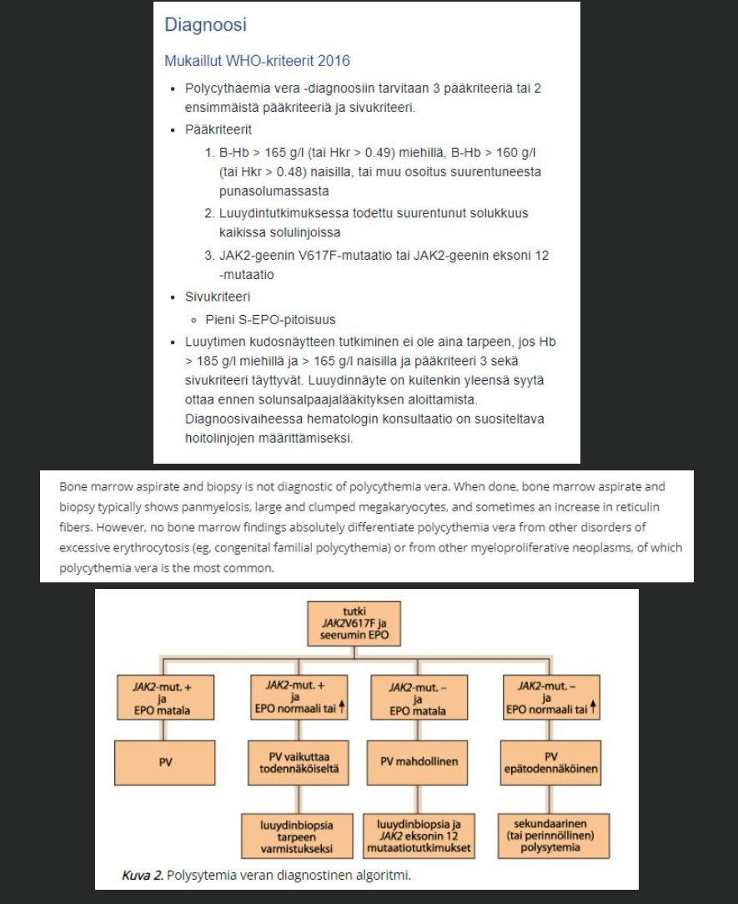

4.1.45 Hyytymisen seulontakokeiden triadi on:
- Verenkuva, INR, FIDD
- Ca, kreatiniini, APTT
- B-Hb, INR, APTT
- B-tromb, INR, APTT
dTutkimukset kattavat sekä primäärin hemostaasin (verihiutaletulppa -> trombosyyttien määrä tärkein tutkimus) että sekundaarisen hemostaasin (hyytymiskaskadi; INR kattaa ulkoisen (ja yhteisen) hyytymisreitin ja APTT sisäisen (ja yhteisen) hyytymisreitin).
a: FIDD ei varsinkaan kuulu hyytymisongelmien perustutkimuksiin. D-dimeeri eli FiDD on fibriinin hajoamistuote eli sen arvo kohoaa fibrinolyysin seurauksena. Voidaan käyttää esim. SLT, KE ja DIK tutkimisessa; pääasiassa poissulkevana tutkimuksena algoritmien mukaan (ei siis aina).
b: Kalsium on kyllä välttämätön kofaktori hyytymiskaskadissa. Kreatiniini mittaa munuaisten toimintaa. Kumpikaan ei ole varsinainen kohdennettu hyytymisen seulontakoe.
c: Hemoglobiini kertoo potilaan punasolutilanteesta ja mahdollisesta anemiatilasta (tai runsaana Hb-arvona mahdollisista viskositeettioireista ja tukosalttiudesta) runsaan vuodon seurauksena, mutta se ei kuvaa itse hyytymismekanismin tai vuodon tyrehtymisen toimintaa.4.1.46 Oireettoman 50-vuotiaan essentielliä trombosytoosia sairastavan peruslääkitys on
- Pienimolekulaarinen hepariini
- Marevan-hoito
- Aspiriinihoito
- Interferonihoito
cHyväennusteista polysytemiaa tai essentiaalista trombosytemiaa ei pidetä luuytimen kantasolujensiirron aiheina. Parantavaa hoitoa ei siten ole tarjolla, eikä leukemian tai myelofibroosin kehittymisen riskiä voida nykyhoidoilla vähentää. Niinpä hoidon tavoitteena on tromboottisten tapahtumien ehkäisy muun muassa antitromboottisella lääkityksellä sekä veren solumäärien pienentämisellä verta poistamalla tai lääkkeellisesti. On tärkeää arvioida ja korjata valtimonkovettumisen yleiset riskitekijät.
Pieniannoksinen asetyylisalisyylihappohoito on osoittanut tehonsa lisäämättä merkittävästi vuotojen määrää. ASA aloitetaan diagnoosivaiheessa (niin ET kuin PV), ja sitä jatketaan pysyvästi, elleivät haittavaikutukset pakota lopettamaan eivätkä tromboosit edellytä vaihtamista antikoagulanttihoitoon. Kun huomioidaan JAK2 V617F -mutaation itsenäinen tromboosiriskiä kohottava vaikutus, voi asetyylisalisyylihappohoidon jättää aloittamattakin potilaalle, jonka riski on pieni, mikäli taudin aiheuttaa kalretikuliinimutaatio.
Kun potilaalla todetaan polycythaemia vera tai essentiaalinen trombosytemia, hänen pitää lopettaa tupakointi. Hyperglykemia sekä kohonnut verenpaine ja suurentunut kolesterolipitoisuus on myös korjattava tehokkaasti veritulppariskin vähentämiseksi. Laihduttaminen pienentää lihavien potilaiden tromboosiriskiä.
a ja b: Antikoagulaatiohoitoa ei käytetä ET-potilaan rutiininomaisessa trombiprofylaksiassa. AK-hoitoa tarvitaan vain, jos potilaalle kehittyy sairauden seurauksena todellinen laskimotukos (esimerkiksi syvä laskimotukos, keuhkoembolia tai porttilaskimotukos) tai esiintyy muu tarve antikoagulaatiolle (esim. eteisvärinä).
d: Interferonihoidolla on saavutettu väliaikaisia hematologisia remissioita ja tautikloonin alleelikuorman (JAK2/CALR) vähentymistä, harvoin jopa molekulaarisia remissioita (mutaatiokloonin häviäminen). Myös hydroksiurealla on kuvattu saavutetun joitakin molekulaarisia remissioita, samoin ruksolitinibilla (JAK1/2:n estäjä), joka onkin muun muassa Yhdysvalloissa saanut hyväksynnän polycythaemia veran toisen linjan hoidoksi. Uusia lääkeaineryhmiä tutkitaan. Hoidot eivät kuitenkaan ole ensilinjan hoitoja nuorilla muuten terveillä, vaan näitä sytoreduktiivisia hoitoja (lasketaan trombosyyttitasoja) käytetään, jos potilas on korkean riskin potilas eli yli 60-vuotias ja merkittäviä kardiovaskulaaririskitekijöitä/valtimotrombeja tai iästäkin riippumatta jos taustalla aikaisempia tukoksia.
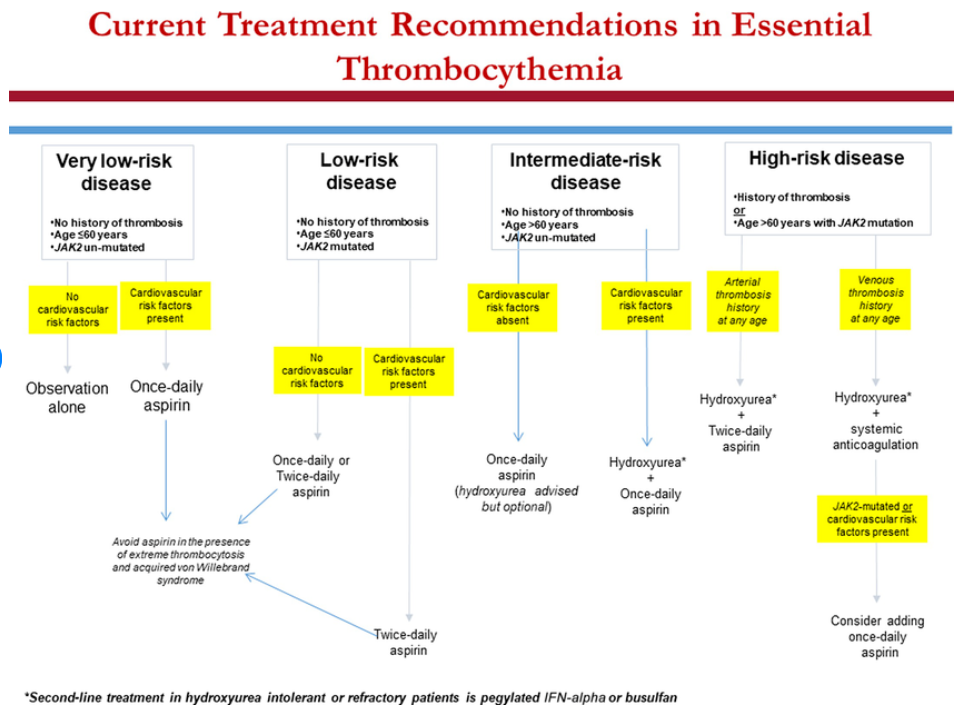
4.1.47 Mikä hyytymistekijä puuttuu hemofilia B:ssä?
- Hyytymistekijä V
- Hyytymistekijä VIII
- Hyytymistekijä IX
- Hyytymistekijä XI
cHemofilia B eli Christmas disease on koagulaatiohäiriö, joka johtuu hyytymistekijän IX tuotannon puutteesta. Se periytyy yleensä X-resessiivisesti.
a: FV-puutos on erittäin harvinainen perinnöllinen vuototauti nimeltään parahemofilia eli Owrenin tauti. Paljon tunnetumpi tekijän 5 ongelma on sen mutaatio eli Faktori V Leiden. FV Leiden johtuu pistemutaatiosta, joka aiheuttaa APC-resistenssiä eli se estää hyytymistekijä Va:n (aktivoitunut tekijä 5) pilkkoutumista proteiini C:n (activated protein C eli APC) toimesta, mikä taas johtaa kohonneeseen tromboositaipumukseen.
b: FVIII-puutos aiheuttaa Hemofilia A:n, joka on hemofilioista kaikkein tavallisin (noin 80–85 % hemofiliatapauksista). Sekin periytyy yleensä X-resessiivisesti.
d: FXI-puutos aiheuttaa Hemofilia C:n (Rosenthalin oireyhtymän), joka on huomattavasti harvinaisempi kuin hemofilia A tai B. Se periytyy autosomissa resessiivisesti. Pääasiassa aškenasijuutalaisten ongelma.
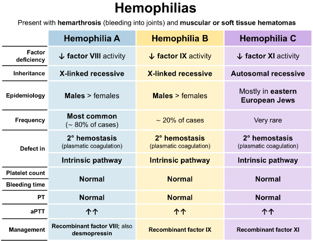
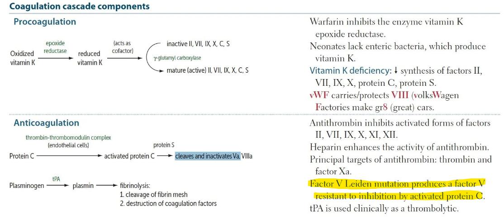
4.1.48 Mihin seuraavista tiloista voi liittyä mikrosytaarinen anemia?
- Folaatin puutos
- Hemolyysi
- Talassemia
- Lapamato suolistossa
cTalassemia on perinnöllinen hemoglobiinisynteesin häiriö, jossa hemoglobiinimolekyylin globiiniketjujen (joko siis alfa- tai beta riippuen mutaatiosta) tuotanto on puutteellista. Tämä johtaa siihen, että punasoluista tulee poikkeuksellisen pieniä (mikrosytoosi) ja kalpeita (hypokromisia). Suomessa talassemia on harvinainen kantaväestössä, mutta se on maailmanlaajuisesti (erityisesti Välimeren alueella, Afrikassa ja Aasiassa, koska uskotaan suojaavan malarialta) hyvänlaatuisen mikrosytoosin tärkeimpiä syitä raudanpuutteen oireiden rinnalla.
a ja d: Folaatin (B9-vitamiinin) puute ja lapamadon aiheuttama B12-puute aiheuttavat makrosytäärisen anemian.
b: Hemolyysi on tyypillisesti normosytäärinen (koska tuhonneiden punasolujen tilalle tuotetaan normaaleja punasoluja) tai kevyesti makrosytäärinen, koska runsas määrä retikulosyyttejä voi nostaa MCV:tä (retikulosyytit ovat kypsiä punasoluja isompia). Hemolyysissä eli punasolujen tuhoutumisessa, jos luuydin on terve se siis pyrkii korjaamaan tilannetta tuottamalla verenkiertoon runsaasti nuoria punasoluja eli retikulosyyttejä.